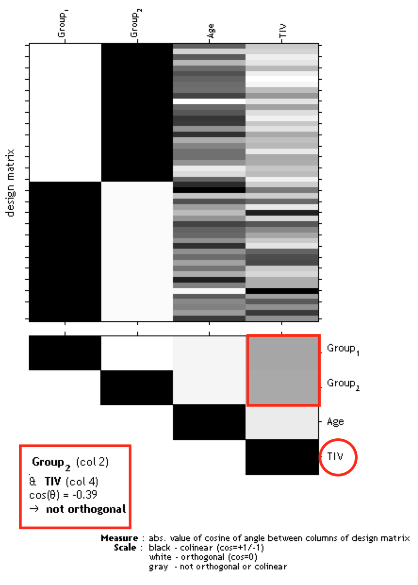
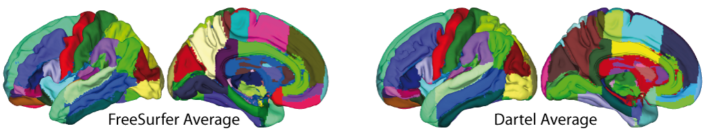

Manual Computational Anatomy Toolbox CAT12
Introduction and overview
Introduction

The brain is the most complex organ of the human body, and no two brains are alike. The study of the human brain is still in its infancy, but rapid technical advances in image acquisition and image processing have allowed for ever more refined characterizations of its micro- and macro-structure. Enormous efforts, for example, have been made to map differences between groups (e.g., young vs. old, diseased vs. healthy, male vs. female), to capture changes over time (e.g., from infancy to old age, or in the framework of neuroplasticity, as a result of a clinical intervention), or to assess correlations of brain attributes (e.g., measures of length, volume, shape) with behavioral, cognitive, or clinical parameters.
CAT12 is a powerful suite of tools for morphometric analyses with an intuitive graphical user interface, but also usable as a shell script. CAT is suitable for beginners, casual users, experts, and developers alike providing a comprehensive set of analysis options, workflows, and integrated pipelines. The available analysis streams allow for voxel-based, surface-based, as well as region-based morphometric analyses. Importantly, CAT includes various quality control options and covers the entire analysis workflow, from cross-sectional or longitudinal data processing, to the statistical analysis, and visualization of results.
Overview about the manual
This manual is intended to help any user to perform a computational anatomy analysis using the CAT12 Toolbox. Although it mainly focuses on voxel-based morphometry (VBM) other variants of computational analysis such as deformation-based morphometry (DBM), surface-based morphometry (SBM), and region of interest (ROI) morphometric analysis are also presented and can be applied with few changes.
The manual can be divided into four main sections:- Naturally, a quick guide of how to get started is given at the beginning. This section provides information about downloading and installing the software and starting the Toolbox. Also, a brief overview of the steps of a VBM analysis is given.
- This is followed by a detailed description of a basic VBM analysis that guides the user step-by-step through the entire process - from preprocessing to contrast selection. This description should provide all the information necessary to successfully analyze most studies.
- There are some specific cases of VBM analyses, for which the basic analysis workflow has to be adapted. These cases are longitudinal studies and studies in children or special patient populations. Relevant changes to a basic VBM analysis are described here and how these changes can be applied. Only the changes are described here - steps such as quality control or smoothing are the same as those described in the basic analysis and are not repeated a second time.
- The guide concludes with additional information about spaces after registration, naming conventions used and other hints.
Quick start guide
VBM data
- Segment data using defaults (use Segment Longitudinal Data for longitudinal data).
The resulting segmentations that can now be used for VBM are saved in the "mri" folder and are named "mwp1" for gray matter and "mwp2" for white matter. If you have used the longitudinal pipeline, the default segmentations for gray matter are named "mwp1r" or "mwmwp1r" if the longitudinal model for detecting larger changes was selected. - Get total intracranial volume (TIV) to correct for different brain sizes and volumes.
Select the xml-files that are saved in the "report" folder. - Check the data quality with Sample Homogeneity for VBM data (optionally consider TIV and age as nuisance variables).
Select the gray or white matter segmentations from the first step. - Smooth data (recommended start value 6mm1).
Select the gray or white matter segmentations from the first step. - Specify the 2nd-level Model with the smoothed gray or white matter segmentations and check for design orthogonality and sample homogeneity:
- Select "Two-sample t-test" or "Multiple regression" or use "Full factorial" for any cross-sectional data.
- Use "Flexible factorial" for longitudinal data.
- Use TIV as covariate (confound) to correct different brain sizes.
- Select threshold masking with an absolute value of 0.1. This threshold can ultimately be increased to 0.2 or even 0.25 if you still notice non-brain areas in your analysis.
- If you find a considerable correlation between TIV and any other parameter of interest it is advisable to use global scaling with TIV. For more information, refer to Orthogonality.
- Estimate the model and finally call Results.
- Optionally Transform and Threshold SPM-maps to (log-scaled) p-maps or correlation maps.
- Optionally, you can try Threshold-Free Cluster Enhancement (TFCE) with the SPM.mat file of a previously estimated statistical design.
- Optionally Overlay Selected Slices. If you are using log-p scaled maps from "Transform SPM-maps" without thresholds or the TFCE_log maps, use the following values as the lower range for the colormap for the thresholding: 1.3 (P<0.05); 2 (P<0.01); 3 (P<0.001).
- Optionally use Surface Overlay for visualization of your results. Select the results (preferably saved as log-p maps with "Transform SPM-maps" or the TFCE_log maps with the different methods for multiple comparison correction) to display rendering views, slice overlay, and a glassbrain of your results.
- Optionally estimate results for ROI analysis using Analyze ROIs. Here, the SPM.mat file of the already estimated statistical design will be used. For more information, see Atlas Creation and ROI based Analysis.
Additional surface data
- Segment data and also select "Surface and thickness estimation" under "Writing options" (for longitudinal data use Segment Longitudinal Data).
The surfaces data are saved in the folder "surf" and are named "?h.thickness.*" for cortical thickness. - Optionally, Extract Additional Surface Parameters (e.g. sulcal depth, gyrification, cortical complexity).
- Resample & smooth surface data (suggested starting value 12mm for cortical thickness and 20-25mm for folding measures1, use the default merging of hemispheres).
Select the "lh.thickness.*" data in the folder "surf". The resampled data are named "s12.mesh.resampled_32k.thickness.*" for 12mm smoothed, merged hemispheres that were resampled to 32k template space. - Check data quality of the resampled data using Sample Homogeneity.
- Build 2nd-level Model for the resampled data and check for design orthogonality and sample homogeneity.
- Select "Two-sample t-test" or "Multiple regression" or use "Full factorial" for any cross-sectional data.
- Use "Flexible factorial" for longitudinal data.
- It is not necessary to use TIV as a covariate (confound) because cortical thickness or other surface values are usually not dependent on TIV.
- It is not necessary to use any threshold masking.
- If you find a considerable correlation between a nuisance parameter and any other parameter of interest it is advisable to use global scaling with that parameter. For more information, refer to Orthogonality.
- Estimate the surface model and finally call Results.
- Optionally Transform and Threshold SPM-maps to (log-scaled) p-maps or correlation maps.
- Optionally, you can try Threshold-Free Cluster Enhancement (TFCE) with the SPM.mat file of a previously estimated statistical design.
- Optionally use Surface Overlay for visualization of your results. Select the results (preferably saved as log-p maps with "Transform SPM-maps" or the TFCE_log maps with the different methods for multiple comparison correction) for the merged hemispheres to display rendering views of your results.
- Optionally Extract ROI-based Surface Values such as gyrification or fractal dimension to provide ROI analysis. Since version 12.7 extraction of ROI-based thickness is not necessary anymore because this is now included in the segmentation pipeline.
- Optionally estimate results for ROI analysis using Analyze ROIs. Here, the SPM.mat file of the already estimated statistical design will be used. For more information, see Atlas Creation and ROI based Analysis.
Additional options
Additional parameters and options are displayed in the CAT12 expert mode. Please note that this mode is for experienced users only.
Errors during preprocessing
Please use the Report Error function if any errors during preprocessing occurred. You first have to select the "err" directory, which is located in the folder of the failed record, and finally, the specified zip-file should be attached manually in the mail.
1Note to filter sizes for Gaussian smoothing
Smoothing increases the signal-to-noise ratio. The matched filter theorem states that the filter that matches your signal maximizes the signal-to-noise ratio. If we expect signal with a Gaussian shape and a FWHM of, say 6mm in our images, then this signal will be best detected after we smooth our images with a 6mm FWHM Gaussian filter. If you are trying to study small areas like the amygdala, we can use smaller filter sizes because of the small size of these regions. For larger regions like the cerebellum, the effects are better detected with larger filters.
Please also note that for the analysis of cortical folding measures such as gyrification or cortical complexity the filter sizes have to be larger (i.e. in the range of 15-25mm). This is due to the underlying nature of this measure that reflects contributions from both sulci as well as gyri. Therefore, the filter size should exceed the distance between a gyral crown and a sulcal fundus.
Version information
Preprocessing should remain unaffected until the next minor version number (12.x). New processing of your data is not necessary if the minor version number of CAT12 remains unchanged.
Changes in version CAT12.8.2 (2130)
Important new features
- The CAT12 manual is now converted to HTML and merged with the online help to a single HTML file with interactive Matlab links that can be called in Matlab.
- Added new thalamic nuclei atlas.
- Moved some rarely used CAT12 options to expert mode.
- Added many new options to visualize 3D (VBM) results (e.g. new glass brain)
- The tool to check Sample Homogeneity. has many new options and is now based on calculation of Z-score which is much faster for larger samples./li>
- New Basic Models to easier define cross-sectional and longitudinal statistical designs. Some unnecessary options have been removed compared to "Basic Models" in SPM12 and some useful options have been added.
Changes in version CAT12.8.1 (1975)
Changes in preprocessing pipeline (which affects your results compared to CAT12.8)
- The longitudinal pipeline has been largely updated and is no longer compatible with preprocessing with version 12.8:
- The estimate of subject-specific TPM should now be more stable and less sensitive to changes between time points.
- For data where the brain/head is still growing between time points and major changes are expected, a new longitudinal development model was added. For this type of data, an adapted pipeline was created that is very similar to the longitudinal aging model, but uses a time point-independent affine registration to adjust for brain/head growth. In addition, this model uses a subject-specific TPM based on the average image.
- An additional longitudinal report is now provided to better assess differences between time points.
Changes in version CAT12.8 (1830)
Changes in preprocessing pipeline (which affects your results compared to CAT12.7)
- Volumetric templates, atlases, and TPMs are now transformed to MNI152NLin2009cAsym space to better match existing standards. The templates_volume folder is now renamed to ''templates_MNI152NLin2009cAsym'' to indicate the template space used. The Dartel and Geodesic Shooting templates are renamed or relocated:
- templates_volumes/Template_0_IXI555_MNI152_GS.nii → templates_MNI152NLin2009cAsym/Template_0_GS.nii
- templates_volumes/Template_1_IXI555_MNI152.nii → templates_MNI152NLin2009cAsym/Template_1_Dartel.nii
- templates_volumes/TPM_Age11.5.nii → templates_MNI152NLin2009cAsym/TPM_Age11.5.nii
- templates_volumes/Template_T1_IXI555_MNI152_GS.nii → templates_MNI152NLin2009cAsym/Template_T1.nii
- spm12/toolbox/FieldMap/T1.nii → templates_MNI152NLin2009cAsym/T1.nii
- spm12/toolbox/FieldMap/brainmask.nii → templates_MNI152NLin2009cAsym/brainmask.nii
- The volumetric atlases have been revised and are now defined with a spatial resolution of 1mm, except for the Cobra atlas, which is defined with 0.6mm resolution. The labels of the original atlases were either transformed from the original data or recreated using a maximum likelihood approach when manual labels were available for all subjects (Cobra, LPBA40, IBSR, Hammers, Neuromorphometrics). In addition, the original labels are now used for all atlases if possible. Some atlases were updated to include new regions (Julichbrain, Hammers) and a new atlas of thalamic nuclei was added. Please note that this will also result in slight differences in ROI estimates compared to previous versions.
- The bounding box of the Dartel and Geodesic Shooting templates has been changed, resulting in a slightly different image size of the spatially registered images (i.e. modulated normalized segmentations). Therefore, older preprocessed data should not (and cannot) be mixed with the new processed data (which is intended).
- Transformed T1 Dartel/GS surface templates to the new MNI152NLin2009cAsym space:
- templates_surfaces/lh.central.Template_T1_IXI555_MNI152_GS.gii → templates_surfaces/lh.central.Template_T1.gii
- templates_surfaces/rh.central.Template_T1_IXI555_MNI152_GS.gii → templates_surfaces/rh.central.Template_T1.gii
- templates_surfaces_32k/lh.central.Template_T1_IXI555_MNI152_GS.gii → templates_surfaces_32k/lh.central.Template_T1.gii
- templates_surfaces_32k/rh.central.Template_T1_IXI555_MNI152_GS.gii → templates_surfaces_32k/rh.central.Template_T1.gii
- The surface pipeline has been optimized to better handle data at different spatial resolutions.
- Older preprocessing pipelines (12.1, 12.3, 12.6) were removed because their support became too difficult.
Important new features
- The Mahalanobis distance in the Quality Check is now replaced by the normalized ratio between overall weighted image quality (IQR) and mean correlation. A low ratio indicates good quality before and after preprocessing and means that IQR is highly rated (resulting in a low nominal number/grade) and/or mean correlation is high. This is hopefully a more intuitive measure to combine image quality measurement before and after preprocessing.
- CAT12 now allows the use of the BIDS directory structure for storing data (not possible for the longitudinal pipeline). A BIDS path can be defined relative to the participant level directory. The segmentation module now supports the input of nii.gz files (not possible for the longitudinal pipeline).
- The Basic Models function has been completely restructured and simplified. There are now only two models available for: (1) cross-sectional data and (2) longitudinal data. Options that are not relevant for VBM or SBM have been removed. In addition, a new experimental option has been added that allows a voxel-wise covariate to be defined. This can be used (depending on the contrast defined) to (1) remove the nuisance effect of structural data (e.g. GM) on functional data or (2) examine the relationship (regression) between functional and structural data. Additionally, an interaction can be modeled to investigate whether the regression between functional and structural data differs between two groups. Please note that the saved vSPM.mat file can only be evaluated with the TFCE toolbox.
- Added a new function cat_io_data2mat.m to save spatially registered volume or resampled surface data as Matlab data matrix for further use with machine learning tools. Volume data can be resampled to lower spatial resolutions and can optionally be masked to remove non-brain areas.
- Added a new function cat_vol_ROI_summarize.m to summarise co-registered volume data within a region of interest (ROI). This tool can be used in order to estimate ROI information for other (co-registered) modalities (i.e. DTI, (rs)fMRI) which can be also defined as 4D data. Several predefined summary functions are available, as well as the possibility to define your own function.
- Added a new function cat_stat_quality_measures.m to estimate and save quality measures for very large samples.
- Added standalone tools for de-facing, DICOM import, and estimating and saving quality measures for large samples.
Changes in version CAT12.7 (1700)
Changes in preprocessing pipeline (which affects your results compared to CAT12.6)
- Geodesic shooting registration and surface estimation are now used by default.
- The surface pipeline is largely updated: (1) Parameters for surface reconstruction were optimized. (2) Freesurfer distance method Tfs is now implemented, which is computed as the average of the closest distances from the pial to the white matter surface and from the white matter to the pial surface. This reduces the occurrence of larger thickness values and results in more reliable thickness measures. For mapping of 3D data the old thickness metric from PBT is more appropriate and is still used.
- An additional longitudinal model is implemented that also takes into account deformations between time points. The use of deformations between the time points makes it possible to estimate and detect larger changes, while subtle effects over shorter periods of time in the range of weeks or a few months can be better detected with the model for small changes.
- Minor changes were made to the segmentation approach to improve accuracy and reliability.
- Internal resampling is now using a new ''optimal'' resolution setting to better support high-resolution data.
- Changed recommendation and defaults for smoothing size to smaller values.
- Renamed template folder for volumes to templates_volumes.
- Atlases installed in spm12/atlas are now called cat12_atlasname.
- The old AAL atlas has been replaced by the AAL3 atlas.
- Cobra atlas is updated because of some previous inconsistencies.
Important new features
- New GUI
- Added older preprocessing pipelines (12.1, 12.3, 12.6) to provide compatible versions to previous preprocessing. These older preprocessing pipelines are available via the SPM batch editor (SPM → Tools → CAT12) or through expert mode.
- Added simple batch for cross-sectional and longitudinal data that combines several processing steps from preprocessing to smoothing. These batches are available via the SPM batch editor(SPM → Tools → CAT12) or through expert mode.
- The function Display surface results can now also visualize results from VBM analysis and map the 3D volume information onto the surface using an absmax mapping function inside the cortical band. The function is now renamed to ''Surface Overlay''.
- You can call Results now from the CAT12 GUI with some new functionality for surfaces and the option to call TFCE results.
- CAT12 now uses Piwik for anonymized CAT12 user statistics (i.e. version information, potential errors). See CAT12 user statistics for more information. This can be optionally disabled in cat_defaults.m.
- The extraction of ROI-based thickness is not necessary anymore because this is now included in the segmentation pipeline in cat_main.m.
- Changed gifti-format after resampling to use external dat-files. This increases processing speed and prevents the SPM.mat file for surfaces from becoming too large. This can be optionally disabled in cat_defaults.m.
- The use of own atlases for ROI processing is now supported.
- Updated and extended examples for statistical designs and respective contrasts in the CAT12 manual.
Changes in version CAT12.6 (1445)
Changes in preprocessing pipeline (which affects your results compared to CAT12.5)
- Two main parts of the preprocessing of CAT12 were largely updated: (1) Incorrect estimates of the initial affine registration were found to be critical for all subsequent preprocessing steps and mainly concerned skull-stripping and tissue segmentation. This was a particular problem in the brains of older people or children, where the thickness of the skull differs from that of the template. The new estimate of the initial affine registration should now be more robust. In the CAT report, the registered contour of the skull and the brain is now overlayed onto the image to allow for easier quality control. (2) Skull-stripping now uses a new adaptive probability region-growing (APRG) approach, which should also be more robust. APRG refines the probability maps of the SPM approach by region-growing techniques of the gcut approach with a final surface-based optimization strategy. This is currently the method with the most accurate and reliable results.
- The longitudinal pipeline should now also be more sensitive for the detection of effects over longer time periods with VBM (ROI and SBM approaches are not affected by the length of the period). In earlier versions, the average image was used to estimate the spatial registration parameters for all time points. Sometimes this average image was not as accurate if the images of a subject were too different (e.g. due to large ventricular changes). Now, we rather use the average spatial registration parameters (i.e. deformations) of all time points, which makes the approach more robust for longer periods of time. However, the SPM12 Longitudinal Toolbox can be a good alternative for longer periods of time if you want to analyze your data voxel by voxel. Surface-based preprocessing and also the ROI estimates in CAT12 are not affected by the potentially lower sensitivity to larger changes, as the realigned images are used independently to create cortical surfaces, thickness, or ROI estimates.
Important new features
- CAT report now additionally plots the contour of the registered skull and brain onto the image and visualizes skull-stripping. Display surface results is largely updated.
- Parallelization options in CAT12 now enable subsequent batch jobs and are also supported for longitudinal preprocessing.
Changes in version CAT12.5 (1355)
Changes in preprocessing pipeline (which affects your results compared to CAT12.3)
- Detection of white matter hyperintensities (WMHs) is updated and again enabled by default.
- The default internal interpolation setting is now "Fixed 1 mm" and offers a good trade-off between optimal quality and preprocessing time and memory demands. Standard structural data with a voxel resolution around 1 mm or even data with high in-plane resolution and large slice thickness (e.g. 0.5x0.5x1.5 mm) will benefit from this setting. If you have higher native resolutions the highres option "Fixed 0.8 mm" will sometimes offer slightly better preprocessing quality with an increase of preprocessing time and memory demands.
Important new features
- CAT12 can now deal with lesions that have to be set to zero in your image using the Stroke Lesion Correction (SLC) in expert mode. These lesion areas are not used for segmentation or spatial registration, thus these preprocessing steps should be almost unaffected.
Changes in version CAT12.4 (1342)
- This version had some severe errors in spatial registration which affected all spatially registered data and should not be used anymore.
Changes in version CAT12.3 (1310)
Changes in preprocessing pipeline (which affects your results compared to CAT12.2)
- Skull-stripping is again slightly changed and the SPM approach is now used as default. The SPM approach works quite well for the majority of data. However, in some rare cases, parts of GM (i.e. in the frontal lobe) might be cut. If this happens the GCUT approach is a good alternative.
- Spatial adaptive non-local mean (SANLM) filter is again called as a very first step because noise estimation and de-noising works best for original (non-interpolated) data.
- Detection of white matter hyperintensities (WMHs) is currently disabled by default, because of unreliable results for some data.
Important new features
- Cobra atlas has been largely extended and updated.
Changes in version CAT12.2 (1290)
Changes in preprocessing pipeline (which affects your results compared to CAT12.1)
- Skull-stripping now additionally uses SPM12 segmentations by default: The default gcut approach in CAT12.1 removed too much of the surrounding (extracranial) CSF, which led to a slight underestimation of TIV for atrophied brains. The skull-stripping approach based on the SPM12 segmentations prevents this through a more conservative approach. However, sometimes parts of the meninges (i.e. dura mater) or other non-brain parts remain in the GM segmentation. By combining both approaches a more reliable skull-stripping is achieved.
- More reliable estimation of TIV: The changed skull-stripping also affects the estimation of TIV, which is now more reliable, especially for atrophied brains.
Important new features
- Automatic check for design orthogonality and sample homogeneity using SPM.mat in Basic Models
- Added equi-volume model by Bok and a multi-save option for mapping native volumes to individual surfaces.
- Added Local-Global Intrinsic Functional Connectivity parcellation by Schaefer et al. for resting-state fMRI data.
Getting started
Download and installation
- The CAT12 Toolbox runs within SPM12. That is, SPM12 must be installed and added to your Matlab search path before the CAT12 Toolbox can be installed (see the SPM site and SPM Wiki for more help).
- Download and unzip the CAT12 Toolbox. You will get a folder named "cat12", which contains various Matlab files and compiled scripts. Copy the folder "cat12" into the SPM12 "toolbox" folder.
- On newer MAC OS systems (10.15 or higher: Catalina, Big Sur, Monterey, Ventura) you may need to follow the SPM12 installation instructions to prevent issues with MEX files.
- Older CAT12 versions can be found here.
Starting the toolbox
- Start Matlab
- Start SPM12 (i.e., type "spm pet")
- Select "cat12" from the SPM menu (see Figure 1). You will find the drop-down menu between the "Display" and the "Help" button (you can also call the Toolbox directly by typing "cat12" on the Matlab command line). This will open the CAT12 Toolbox as an additional window (Fig. 2).
|
|
|
|
|
|

Basic VBM analysis (overview)
The CAT12 Toolbox comes with different modules, which may be used for analysis. Usually, a VBM analysis comprises the following steps:
(a) Preprocessing:- T1 images are normalized to a template space and segmented into gray matter (GM), white matter (WM), and cerebrospinal fluid (CSF). The preprocessing parameters can be adjusted via the module "Segment Data".
- After the preprocessing is finished, a quality check is highly recommended. This can be achieved via the modules "Display slices" and "Check sample". Both options are located in the CAT12 window under "Check Data Quality". Furthermore, quality parameters are estimated and saved in xml-files for each data set during preprocessing. These quality parameters are also printed on the report PDF-page and can be additionally used in the module "Check sample".
- Before entering the GM images into a statistical model, image data needs to be smoothed. Of note, this step is not implemented into the CAT12 Toolbox but achieved via the standard SPM module "Smooth".
- The smoothed GM images are entered into a statistical analysis. This requires building a statistical model (e.g. T-Tests, ANOVAs, multiple regressions). This is done by the standard SPM modules "Specify 2nd Level" or preferably "Basic Models" in the CAT12 window covering the same function but providing additional options and a simpler interface optimized for structural data.
- The statistical model is estimated. This is done with the standard SPM module "Estimate" (except for surface-based data where the function "Estimate Surface Models" should be used instead).
- If you have used total intracranial volume (TIV) as a confound in your model to correct for different brain sizes it is necessary to check whether TIV reveals a considerable correlation with any other parameter of interest and rather uses global scaling as an alternative approach.
- After estimating the statistical model, contrasts are defined to get the results of the analysis. This is done with the standard SPM module "Results".
The sequence of "preprocessing → quality check → smoothing → statistical analysis" remains the same for every VBM or SBM analysis, even when different steps are adapted (see Processing of Data such as Children).
A few words about the Batch Editor...- As soon as you select a module from the CAT12 Toolbox menu, a new window (the Batch Editor) will open. The Batch Editor is the environment where you will set up your analysis (see Figure 3). For example, an "<-X" indicates where you need to select files (e.g. your image files, the template, etc.). Other parameters have either default settings (which can be modified) or require input (e.g. choosing between different options, providing text or numeric values, etc.).
- Once all missing parameters are set, a green arrow will appear on the top of the window (the current snapshots in Figure 3 show the arrow still in gray). Click this arrow to run the module or select "File → Run Batch". It is very useful to save the settings before you run the batch (click on the disk symbol or select "File → Save Batch").
* Additional CAT12-related information can be found by selecting "VBM Website" in the CAT12 window (Tools → Internet → VBM Website). This will open a website. Here, look for "VBM subpages" on the right.
- Of note, you can always find helpful information and parameter-specific explanations at the bottom of the Batch Editor window*.
- All settings can be saved either as .mat file or as .m script file and reloaded for later use. The .m script file has the advantage of being editable with a text editor.
Overview of CAT12 processing
CAT12 major processing steps
As shown in Figure 4, CAT's processing workflow comprises two main steps: voxel-based processing and surface-based processing. The former is a prerequisite for the latter, but not the other way round. That is, while voxel-based processing is always required for surface-based analyses, users not interested in surface-based analyses can simply omit this second step to save processing time. The "Voxel-based processing" step (Figure 4, left) can be thought of as one module for tissue segmentation and another one for spatial registration. An optional third module allows for the generation of ROIs and the calculation of ROI-based measures. The "Surface-based processing" step (Figure 4, right) can be thought of as one module for surface creation and another one for surface registration. An optional third module allows for the generation of surfaced-based ROIs and the calculation of ROI-based measures. As shown in Figure 4, the different modules utilize different priors, templates, and atlases. Those are briefly explained in the next paragraph.
Voxel-based processing: While the final tissue segmentation in CAT is independent of tissue priors, the segmentation procedure is initialized using Tissue Probability Maps (TPMs). The standard TPMs (as provided in SPM) suffice for the vast majority of applications, and customized TPMs are only recommended for data obtained in young children. Please note that these TPMs should contain 6 classes: GM/WM/CSF and 3 background classes. For spatial registration, CAT uses Geodesic Shooting (Ashburner and Friston, 2011) or the older DARTEL approach (Ashburner, 2007) with predefined templates. Those templates are an appropriate choice for most studies and, again, sample-specific Shooting templates may only be advantageous for young children. For the voxel-based ROI analyses, CAT offers a selection of volume-based atlases in the predefined template space. Thus, any atlas-based ROI analysis requires a normalization of the individual scans to CAT's default Shooting template. On that note, the aforementioned creation and selection of a customized (rather than the predefined) DARTEL or Geodesic Shooting template will disable the third module for the voxel-based ROI analysis.
Surface-based processing: During the surface registration, the cortical surfaces of the two hemispheres are registered to the Freesurfer "FsAverage" template (as provided with CAT). For surface-based ROI analyses, CAT provides a selection of surface-based atlases. As the surface registration module uses the Freesurfer "FsAverage" template, surface-based ROI analyses are not impacted by any template modification during voxel-based processing. In contrast to voxel-based ROI analyses, surface-based ROI analyses can, therefore, be applied regardless of whether the predefined or customized versions of the DARTEL or Geodesic Shooting template have been used.
CAT12 processing steps in detail
The modules described in the previous section help understand the CAT's overall processing workflow, including its priors, templates, and atlases. Also, data processing in CAT can be separated into three main processes: (1) the initial voxel-based processing, (2) the main voxel-based processing, and (3) the surface-based processing (optional), as further detailed below and visualized in Figure 5.
The "initial voxel-based processing" begins with a spatial adaptive non-local means (SANLM) denoising filter (Manjon et al., 2010), which is followed by internal resampling to properly accommodate low-resolution images and anisotropic spatial resolutions. The data are then bias-corrected and affine-registered (to further improve the outcomes of the following steps) followed by the standard SPM "unified segmentation" (Ashburner and Friston, 2005). The outcomes of the latter step will provide the starting estimates for the subsequent refined voxel-based processing.
The "refined voxel-based processing" uses the output from the unified segmentation and proceeds with skull-stripping of the brain. The brain is then parcellated into the left and right hemisphere, subcortical areas, and the cerebellum. Furthermore, local white matter hyperintensities are detected (to be later accounted for during the spatial normalization and cortical thickness estimation). Subsequently, a local intensity transformation of all tissue classes is performed, which is particularly helpful to reduce the effects of higher gray matter intensities in the motor cortex, basal ganglia, or occipital lobe before the final adaptive maximum a posteriori (AMAP) segmentation. This final AMAP segmentation step (Rajapakse et al., 1997), which does not rely on a priori information of the tissue probabilities, is then refined by applying a partial volume estimation (Tohka et al., 2004), which effectively estimates the fractional content for each tissue type per voxel. As a last default step, the tissue segments are spatially normalized to a common reference space using Geodesic Shooting (Ashburner and Friston, 2011) registrations.
Optionally, the "surface-based processing" will be run following the completion of the voxel-based processing steps. Here, the cortical thickness estimation and reconstruction of the central surface occur in one step using a projection-based thickness (PBT) method (Dahnke et al., 2013). Importantly, this PBT allows the appropriate handling of partial volume information, sulcal blurring, and sulcal asymmetries without explicit sulcus reconstruction (Dahnke et al., 2013). After the initial surface reconstruction, topological defects* are repaired using spherical harmonics (Yotter et al., 2011a). The topological correction is followed by a surface refinement, which results in the final central surface mesh. This mesh provides the basis to extract folding patterns (i.e., based on the position of mesh nodes relative to each other), where the resulting local values (e.g., absolute mean curvature) are projected onto each node. Subsequently, the individual central surfaces are spatially registered to the Freesurfer "FsAverage" template using a spherical mapping with minimal distortions (Yotter et al., 2011b). In the last step, the local thickness values are transferred onto the Freesurfer "FsAverage" template. While this last step is performed by default during the surface-based processing, it can be repeated to also transfer measurements of cortical folding (e.g., gyrification) as well as other measurements or data (e.g., functional or quantitative MRI) to the Freesurfer "FsAverage" template. Note that the spatial registration of cortical measurements is combined with a spatial smoothing step in CAT to prepare the data for statistical analysis.
Preprocessing data
First Module: Segment Data
Please note that additional parameters for expert users are displayed in the GUI if you set the option cat.extopts.expertgui to "1" in cat_defaults.m or call cat12 by:
cat12("expert")
CAT12 → Preprocessing → Segment Data
Parameters:
- Volumes <-X → Select Files → [select the new files] → Done
- Select one volume for each subject. As the Toolbox does not support multispectral data (i.e., different imaging methods for the same brain, such as T1-, T2-, diffusion-weighted, or CT images), it is recommended to choose a T1-weighted image.
- Importantly, the images need to be in the same orientation as the priors; you can double-check and correct them via using "Display" in the SPM menu. The priors are located in your SPM folder "SPM12 → tpm → TPM.nii")
- Split job into separate processes → [use defaults or modify]
- To use multi-threading the CAT12 segmentation job with multiple subjects can be split into separate processes that run in the background. If you don't want to run processes in the background then set this value to 0.
- Keep in mind that each process needs about 1.5..2GB of RAM, which should be considered to choose the appropriate number of processes.
- Options for initial SPM12 affine registration → [use defaults or modify]
- The defaults provide a solid starting point. The SPM12 tissue probability maps (TPMs) are used for the initial spatial registration and segmentation. Alternatively, customized TPMs can be chosen (e.g. for children data) that were created with the Template-O-Matic (TOM) Toolbox. Please note that these TPMs should contain 6 classes: GM/WM/CSF and 3 background classes.
- Extended options for CAT12 segmentation → [use defaults or modify]
- Again, the defaults provide a solid starting point. Using the extended options you can adjust specific parameters or the strength of different corrections ("0" means no correction and "0.5" is the default value that works best for a large variety of data).
- CAT12 provides a template for the high-dimensional Shooting registration that should work for most data. However, a customized Shooting template can be selected (e.g. for children data) that was created using the Shooting toolbox. For more information on the necessary steps, see the section "Customized Shooting Template".
- Writing options → [use defaults or modify]
- For GM, and WM image volumes see information about native, normalized, and modulated volumes.
Note: The default option "Modulated normalized" results in an analysis of relative differences in regional GM volume that have to be corrected for individual brain size in the statistical analysis using total intracranial volume (TIV). - A Bias, noise, and globally intensity corrected T1 image, in which MRI inhomogeneities and noise are removed and intensities are globally normalized, can be written in normalized space. This is useful for quality control and also to create an average image of all normalized T1 images to display/overlay the results.
Note: For a basic VBM analysis use the defaults. - A partial volume effect (PVE) label image volume can also be written in normalized or native space or as a DARTEL export file. This is useful for quality control.
Note: For a basic VBM analysis use the defaults. - The Jacobian determinant for each voxel can be written in normalized space. This information can be used to do a Deformation-Based Morphometry (DBM) analysis.
Note: For a basic VBM analysis this is not needed. - Finally, deformation fields can be written. This option is useful to re-apply normalization parameters to other co-registered images (e.g. fMRI or DTI data).
Note: For a basic VBM analysis this is not needed.
- For GM, and WM image volumes see information about native, normalized, and modulated volumes.
The resulting files are saved in the respective subfolders and are following the CAT12 naming convention.
Note: If the segmentation fails, this is often due to an unsuccessful initial spatial registration. In this case, you can try to set the origin (anterior commissure) in the Display tool. Place the cursor roughly on the anterior commissure and press "Set Origin" The now displayed correction in the coordinates can be applied to the image with the button "Reorient". This procedure must be repeated for each data set individually.
Second Module: Display Slices (optionally)
CAT12 → Data Quality → Single Slice Display
Parameters:
- Sample data <-X → Select Files → [select the new files] → Done
- Select the newly written data [e.g. the "wm*" files, which are the normalized bias-corrected volumes for VBM or the resampled and smoothed surfaces for SBM]. This tool will display one horizontal slice for each subject, thus giving a good overview of whether the segmentation and normalization procedures yielded reasonable results. For example, if the native volume had artifacts or if the native volumes had a wrong orientation, the results may look odd. Solutions: Use "Check Reg" from the SPM main menu to make sure that the native images have the same orientation as the MNI Template ("SPM → templates → T1"). Adjust if necessary using "Display" from the SPM main menu.
- Proportional scaling → [use defaults or modify]
- Check "yes", if you display T1 volumes.
- Spatial orientation
- Show slice in mm → [use defaults or modify]
- This module displays horizontal slices. This default setting provides a good overview.
Third Module: Estimate Total Intracranial Volume (TIV)
CAT12 → Statistical Analysis → Estimate TIV
Parameters:
- XML files <-X → Select Files → [select xml-files] → Done
- Select the xml-files in the report-folder [e.g. the "cat_*.xml"].
- Save values → TIV only
- This option will save the TIV values for each data set in the same order as the selected xml-files. Optionally you can also save the global values for each tissue class, which might be interesting for further analysis, but is not recommended if you are interested in only using TIV as a covariate.
- Output file → [use defaults or modify]
Please note that TIV is strongly recommended as a covariate for all VBM analyses to correct different brain sizes. This step is not necessary for deformation- or surface-based data. Please also make sure that TIV does not correlate too much with your parameters of interest (please make sure that you use "Centering" with "Overall mean", otherwise the check for orthogonality in SPM sometimes does not work correctly). In this case, you should use global scaling with TIV.
Fourth Module: Check Sample Homogeneity
CAT12 → Data Quality → Check Sample Homogeneity
Parameters:
- Data → New: Sample data <-X → Select Files → [select gray matter volumes] → Done
- Select the newly written data [e.g. the "mwp1*" files, which are the modulated (m) normalized (w) GM segments (p1)]. It is recommended to use the unsmoothed segmentations that provide more anatomical details. This tool visualizes the correlation between the volumes using a boxplot and correlation matrices. Thus, it will help to identify outliers. Any outlier should be carefully inspected for artifacts or pre-processing errors using "Check worst data" in the GUI. If you specify different samples the mean correlation is displayed in separate boxplots for each sample.
- Load quality measures (leave empty for autom. search) → [optionally select xml-files with quality measures]
- Optionally select the xml-files that are saved for each data set. These files contain useful information about some estimated quality measures that can be also used for checking sample homogeneity. Please note, that the order of the xml-files must be the same as the other data files. Leave empty for automatically searching for these xml-files.
- Global scaling with TIV [use defaults or modify]
- This option is to correct mean Z-scores for TIV by global scaling. It is only meaningful for VBM data.
- Nuisance → [enter nuisance variables if applicable]
- For each nuisance variable which you want to remove from the data before calculating the correlation, select "New: Nuisance" and enter a vector with the respective variable for each subject (e.g. age in years). All variables have to be entered in the same order as the respective volumes. You can also type "spm_load" to upload a *txt file with the covariates in the same order as the volumes. A potential nuisance parameter can be TIV if you check segmented data with the default modulation.
A window opens with a plot in which the mean Z-scores for all volumes is displayed. High mean Z-scores values mean that your data are more similar to each other. If you click in the plot, the corresponding data is displayed in the lower right corner and allow a closer look. The slider below the image changes the displayed slice. The pop-up menus in the top right-hand corner provide more options. Here you can select other measures that are displayed in the boxplot (e.g. optional quality measures such as noise, bias, weighted overall image quality if these values were loaded). Finally, most deviating data can be displayed in the SPM graphics window to check the data more closely. For surfaces, two additional measures are available (if you have loaded the xml-files ) to utilize the quality check of the surface extraction. The Euler number gives you an idea about the number of topology defects, while the defect size indicates how many vertices of the surface are affected by topology defects. Because topology defects are mainly caused by noise and other image artifacts (e.g. motion) this gives you an impression about the potential quality of your extracted surface.
The boxplot in the SPM graphics window displays the mean Z-score values for each subject and indicates the homogeneity of your sample. A small mean Z-score in the boxplot does not always mean that this volume is an outlier or contains an artifact. If there are no artifacts in the image and if the image quality is reasonable you don't have to exclude this volume from the sample. This tool is intended to utilize the process of quality checking and there are no clear criteria defined to exclude a volume only based on the mean Z-score value. However, volumes with a noticeable lower mean Z-score (e.g. below two standard deviations) are indicated and should be checked more carefully. The same holds for all other measures. Data with deviating values have not necessarily to be excluded from the sample, but these data should be checked more carefully with the "Check most deviating data" option. The order of the most deviating data is changed for every measure separately. Thus, the check for the most deviating data will give you a different order for mean correlation and other measures which allows you to judge your data quality using different features.
If you have loaded quality measures, you can also display the ratio between weighted overall image quality (IQR) and mean Z-score. These two are the most important measures for assessing image quality. Mean Z-score measures the homogeneity of your data used for statistical analysis and is therefore a measure of image quality after pre-processing. Data that deviate from your sample increase variance and therefore minimize effect size and statistical power. The weighted overall image quality, on the other hand, combines measurements of noise and spatial resolution of the images before pre-processing. Although CAT12 uses effective noise-reduction approaches (e.g. spatial adaptive non-local means filter) pre-processed images are also affected and should be checked.
The product between IQR and mean Z-scores makes it possible to combine these two measures of image quality before and after pre-processing. A low ratio indicates good quality before and after preprocessing and means that IQR is highly rated (resulting in a low nominal number/grade) and/or mean Z-score is high. Both measures contribute to the ratio and are normalized before by their standard deviation. In the respective plot, the product value is colour-coded and each point can be selected to get the filename and display the selected slice to check data more closely.
Fifth Module: Smooth
SPM menu → Smooth
Parameters:
- Images to Smooth <-X → Select Files → [select grey matter volumes] → Done
- Select the newly written data [e.g. the "mwp1" files, which are the modulated (m) normalized (w) grey matter segments (p1)].
- FWHM → [use defaults or modify]
- 6-8mm kernels are widely used for VBM. To use this setting select "edit value" and type "6 6 6" for a kernel with 6mm FWHM.
- Data Type → [use defaults or modify]
- Filename Prefix → [use defaults or modify]
Building the statistical model
Starting with CAT12.8, a new batch mode is used to create statistical models. Now, only cross-sectional and longitudinal data are distinguished and only factorial designs and a few other necessary models are offered, but covering all possible designs. The advantage of this new batch is that it provides tailored options for VBM and many of the rather confusing and unnecessary options in "Basic Models" or "Specify 2nd-level" have now been removed and some VBM-specific options such as correction for TIV are newly provided. This should make it easier to build the statistical model in CAT12. However, the "Full factorial" design now used for cross-sectional data is a bit more complicated to use. However, you are free to use the old statistical batch from the SPM12 GUI ("Basic Models" or "Specify 2nd-level") as an alternative.
Here are some hints on how to relate the old models to the new factorial design. For cross-sectional VBM data, you usually have 1..n samples (which corresponds to factor levels) and optionally covariates and nuisance parameters:
|
Number of factor levels |
Number of covariates |
Statistical Model |
|
1 |
0 |
one-sample t-test |
|
1 |
1 |
single regression |
|
1 |
>1 |
multiple regression |
|
2 |
0 |
two-sample t-test |
|
>2 |
0 |
Anova |
|
>1 |
>0 |
AnCova (for nuisance parameters) or Interaction (for covariates) |
General notes and options for statistical models
Please note that when using "Basic Models" in the CAT12 GUI, some unnecessary options have been removed compared to the "Basic Models" in SPM12, and some useful options have been added. We therefore strongly recommend preferring to use the models in CAT12, which offer some advantages especially when defining longitudinal designs.Covariates
This option allows for the specification of covariates and nuisance variables. TIV correction should be rather defined in "Correction of TIV".
Note that SPM does not make any distinction between effects of interest (including covariates) and nuisance effects. Covariates and nuisance parameters are handled in the same way in the GLM and differ only in the contrast used.
- Covariates → New Covariate
- Vector <-X enter the values of the covariates (e.g. age in years) in the same order as the respective file names or type spm_load to upload a *.txt file with the covariates in the same order as the volumes
- Name <-X Specify Text (e.g. age)
- Interactions → None (or optionally "With Factor 1" to account for differences between the groups)
- Centering → Overall mean
Absolute masking is recommended for GM or WM volume data to ensure that you dont analyze regions that dont contain enough GM or WM or regions outside the brain. The default value of 0.1 is a good starting point for VBM data to ensure that only the intended tissue map is analyzed. You can gradually increase this value up to "0.2" but you must make sure that your effects are not cut off.
If you analyze surface data, no additional masking is necessary.
For modulated VBM data, it is strongly recommended to always correct for TIV to account for different brain sizes. There are three options for TIV correction available:
- ANCOVA: Here, any variance that can be explained by TIV is removed from your data (i.e. in every voxel or vertex). This is the preferred option when there is no correlation between TIV and your parameter of interest. For example, a parameter of interest may be a variable in a multiple regression design that you want to relate to your structural data. If TIV is correlated with this parameter, not only will the variance explained by TIV be removed from your data, but also parts of the variance of your parameter of interest, which should be avoided.
Note that for two-sample T-tests and Anova with more than 2 groups, an interaction is modeled between TIV and group that prevents any group differences from being removed from your data, even if TIV differs between your groups.
Use the Check Design Orthogonality option to test for any correlations between your parameters. - Global scaling: If TIV correlates with your parameter of interest, you should rather use global scaling with TIV. The easiest way to define global scaling is to use "Basic Models" in the CAT12 GUI. If you prefer "Basic Models" in SPM12, see here for a detailed description how to define global scaling.
- No: Use this option to disable TIV correction for deformation- or surface-based data where TIV correction is not necessary.
In order to identify images with poor image quality or even artefacts you can use Check Sample Homogeneity. The idea of this option is to check the Z-score of all files across the sample using the files that are already defined in SPM.mat.
The Z-score is calculated for all images and the mean for each image is plotted using a boxplot (or violin plot) and the indicated filenames. The larger the mean (absolute) Z-score the more deviant is this image from the sample mean. In the plot outliers from the sample are usually isolated from the majority of images which are clustered around the sample mean. The mean Z-score is plotted at the y-axis and the x-axis reflects the image order.
The advantage of rechecking sample homogeneity at this point is that the given statistical model (design) is used and potential nuisance parameters are taken into account. If you have longitudinal data, the time points of each data set are linked in the graph to indicate intra-subject data. Unsmoothed data (if available and in the same folder) are automatically detected and used. Finally, report files are used if present (i.e., if data has not been moved or the folders renamed) and quality parameters are loaded and displayed.
If you have modeled TIV as a nuisance parameter, you must check whether TIV is orthogonal (in other words independent) to any other parameter of interest in your analysis (e.g. parameters you are testing for) using Check Design Orthogonality. See here for a detailed description.
Voxel-wise covariate (experimental!)
This experimental option allows the specification of a voxel-wise covariate. If you have more than one modality (i.e., functional and structural data), this can be used (depending on the contrast you define) to:
- Remove the confounding effect of structural data (e.g. GM) on functional data or
- Investigate the relationship (regression) between functional and structural data.
In addition, an interaction can be modeled to examine whether the regression between functional and structural data differs between two groups.
Please note that the saved vSPM.mat file can only be analyzed with the TFCE toolbox r221 or newer.
There exist different options to call results after statistical analysis:
- General function to call results
- Slice Overlay to display volume results (i.e. VBM)
- Surface Overlay that allows to overlay results from surfaces or volumes
Two-sample T-Test
CAT12 → Basic Models
Parameters:
- Directory <-X → Select Files → [select the working directory for your analysis] → Done
- Design → "Two-sample t-test"
- Group 1 scans → Select Files → [select the smoothed grey matter data for group 1; following this script these are the "smwp1" files] → Done
- Group 2 scans → Select Files → [select the smoothed grey matter data for group 2] → Done
- Independence → Yes
- Variance → Equal or Unequal
- Covariates
- Masking
- Threshold masking → Absolute → [specify a value (e.g. "0.1")]
- Implicit Mask → Yes
- Explicit Mask → <None>
- Correction of TIV → ANCOVA, Global scaling, or No
- Check design orthogonality and homogeneity → [use defaults]
Full factorial model (for a 2x2 Anova)
CAT12 → Statistical Analysis → Basic Models
Parameters:- Directory <-X → Select Files → [select the working directory for your analysis] → Done
- Design → "Any cross-sectional data (Full factorial)"
- Factors → "New: Factor; New: Factor"
Factor- Name → [specify text (e.g. "sex")]
- Levels → 2
- Independence → Yes
- Variance → Equal or Unequal
- Name → [specify text (e.g. "age")]
- Levels → 2
- Independence → Yes
- Variance → Equal or Unequal
- Specify Cells → "New: Cell; New: Cell; New: Cell; New: Cell"
Cell- Levels → [specify text (e.g. "1 1")]
- Scans → [select files (e.g. the smoothed GM data of the young males)]
- Levels → [specify text (e.g. "1 2")]
- Scans → [select files (e.g. the smoothed GM data of the old males)]
- Levels → [specify text (e.g. "2 1")]
- Scans → [select files (e.g. the smoothed GM data of the young females)]
- Levels → [specify text (e.g. "2 2")]
- Scans → [select files (e.g. the smoothed GM data of the old females)]
- Factors → "New: Factor; New: Factor"
- Covariates* (see the text box in example for two-sample T-test)
- Masking
- Threshold Masking → Absolute → [specify a value (e.g. "0.1")]
- Implicit Mask → Yes
- Explicit Mask → <None>
- Correction of TIV → ANCOVA, Global scaling, or No
- Check design orthogonality and homogeneity → [use defaults]
Multiple regression (linear)
CAT12 → Statistical Analysis → Basic Models
Parameters:- Directory <-X → Select Files → [select the working directory for your analysis] → Done
- Design → "Multiple Regression"
- Scans → [select files (e.g. the smoothed GM data of all subjects)] → Done
- Covariates → "New: Covariate"
- Vector → [enter the values in the same order as the respective file names of the smoothed images]
- Name → [specify (e.g. "age")]
- Centering → Overall mean
- Intercept → Include Intercept
- Covariates
- Masking
- Threshold masking → Absolute → [specify a value (e.g. "0.1")]
- Implicit Mask → Yes
- Explicit Mask → <None>
- Correction of TIV → ANCOVA, Global scaling, or No
- Check design orthogonality and homogeneity → [use defaults]
Multiple regression (polynomial)
To use a polynomial model, you need to estimate the polynomial function of your parameter before analyzing it. To do this, use the function cat_stat_polynomial (included with CAT12 >r1140):
y = cat_stat_polynomial(x,order)
where "x" is your parameter and "order" is the polynomial order (e.g. 2 for quadratic).
Example for polynomial order 2 (quadratic)
CAT12 → Statistical Analysis → Basic Models
Parameters:- Directory <-X → Select Files → [select the working directory for your analysis] → Done
- Design → "Multiple Regression"
- Scans → [select files (e.g. the smoothed GM data of all subjects)] → Done
- Covariates → "New: Covariate"
- Vector → [specify linear term (e.g. "y(:,1)")]
- Name → [specify (e.g. "age-linear")]
- Centering → Overall mean
- Covariates → "New: Covariate"
- Vector → [specify quadratic term (e.g. "y(:,2)")]
- Name → [specify (e.g. "age-quadratic")]
- Centering → Overall mean
- Intercept → Include Intercept
- Covariates
- Masking
- Threshold masking → Absolute → [specify a value (e.g. "0.1")]
- Implicit Mask → Yes
- Explicit Mask → <None>
- Correction of TIV → ANCOVA, Global scaling, or No
- Check design orthogonality and homogeneity → [use defaults]
Full factorial model (interaction)
CAT12 → Statistical Analysis → Basic Models
Parameters:- Directory <-X → Select Files → [select the working directory for your analysis] → Done
- Design → "Any cross-sectional data (Full factorial)"
- Factors → "New: Factor"
Factor- Name → [specify text (e.g. "sex")]
- Levels → 2
- Independence → Yes
- Variance → Equal or Unequal
- Specify Cells → "New: Cell; New: Cell"
Cell- Levels → [specify text (e.g. "1")]
- Scans → [select files (e.g. the smoothed GM data of the males)]
- Levels → [specify text (e.g. "2")]
- Scans → [select files (e.g. the smoothed GM data of the females)]
- Factors → "New: Factor"
- Covariates → "New: Covariate"
- Covariate
- Vector → [enter the values in the same order as the respective file names of the smoothed images]
- Name → [specify (e.g. "age")]
- Interactions → With Factor 1
- Centering → Overall mean
- Covariate
- Masking
- Threshold Masking → Absolute → [specify a value (e.g. "0.1")]
- Implicit Mask → Yes
- Explicit Mask → <None>
- Correction of TIV → ANCOVA, Global scaling, or No
- Check design orthogonality and homogeneity → [use defaults]
Full factorial model (polynomial interaction)
To use a polynomial model you have to estimate the polynomial function of your parameter prior to the analysis. Use the function cat_stat_polynomial (provided with CAT12 >r1140) for that purpose:
y = cat_stat_polynomial(x,order)
where "x" is your parameter and "order" is the polynomial order (e.g. 2 for quadratic).
Example for polynomial order 2 (quadratic)
CAT12 → Statistical Analysis → Basic Models
Parameters:- Directory <-X → Select Files → [select the working directory for your analysis] → Done
- Design → "Any cross-sectional data (Full factorial)"
- Factors → "New: Factor"
Factor- Name → [specify text (e.g. "sex")]
- Levels → 2
- Independence → Yes
- Variance → Equal or Unequal
- Specify Cells → "New: Cell; New: Cell"
Cell- Levels → [specify text (e.g. "1")]
- Scans → [select files (e.g. the smoothed GM data of the males)]
- Levels → [specify text (e.g. "2")]
- Scans → [select files (e.g. the smoothed GM data of the females)]
- Factors → "New: Factor"
- Covariates → "New: Covariate; New: Covariate"
- Covariate
- Vector → [specify linear term (e.g. "y(:,1)")]
- Name → [specify (e.g. "age-linear")]
- Interactions → With Factor 1
- Centering → Overall mean
- Covariate
- Vector → [specify quadratic term (e.g. "y(:,2)")]
- Name → [specify (e.g. "age-quadratic")]
- Interactions → With Factor 1
- Centering → Overall mean
- Covariate
- Masking
- Threshold Masking → Absolute → [specify a value (e.g. "0.1")]
- Implicit Mask → Yes
- Explicit Mask → <None>
- Correction of TIV → ANCOVA, Global scaling, or No
- Check design orthogonality and homogeneity → [use defaults]
Estimating the statistical model
CAT12 → Estimate (Surface) Models
Select SPM.mat which you just built.
Note that for surface data you should rather use this estimation option instead of "Estimate" in the SPM12 GUI, otherwise the underlying surface after calling the results will be mistakenly be the surface of the first selected data set instead of the average surface.Checking for design orthogonality
If you have modeled TIV as a nuisance parameter, you must check whether TIV is orthogonal (in other words independent) to any other parameter of interest in your analysis (e.g. parameters you are testing for). This means that TIV should not correlate with any other parameter of interest, otherwise not only the variance explained by TIV is removed from your data, but also parts of the variance of your parameter of interest.
Please use "Overall mean" as "Centering" for the TIV covariate. Otherwise, the orthogonality check sometimes even indicates a meaningful co-linearity only because of scaling issues.
To check the design orthogonality, you can either use the respective option in the statistical models or the "Review" function in the SPM12 GUI:
SPM menu → Review
- Select SPM.mat <-X → Select Files → [select the SPM.mat which you just built] → Done
- Design → Design orthogonality
|
 |
|
|
The larger the correlation between TIV and any parameter of interest, the more cautious one must be when using TIV as a nuisance parameter. In this case an alternative approach is to use global scaling with TIV. If you use "Basic Models" in the SPM12 GUI, the following settings for this approach can be used (otherwise the global scaling option in the CAT12 function prepares that for you):
- Global Calculation → User → Global Values <-X → Define the TIV values here
- Global Normalisation → Overall grand mean scaling → Yes → Grand mean scaled value → Define here the mean TIV of your sample (or as approximation a value of 1500 which might fit for the majority of data from adults)
- Normalisation → Proportional
This approach is (proportionally) scaling the data according to the individual TIV values. Instead of removing variance explained by TIV all data are scaled by their TIV values. This is also similar to the approach that was used in VBM8 ("modulate for non-linear effects only"), where global scaling was internally used with an approximation of TIV (e.g. inverse of affine scaling factor).
Please note that global normalization also affects the absolute masking threshold as your images are now scaled to the "Grand mean scaled value" of the Global Normalization option. If you have defined the mean TIV of your sample (or an approximate value of 1500) here, no change of the absolute threshold is required. Otherwise, you will have to correct the absolute threshold because your values are now globally scaled to the "Grand mean scaled value" of the Global Normalization option.
An alternative approach for all models with more than one group should not be unmentioned. This is to use TIV as a nuisance parameter with interaction and mean centering with the factor "group". This interaction is automatically taken into account when you use the TIV ANCOVA correction in CAT12 "Basic Models". That approach will result in separate columns of TIV for each group. The values for the nuisance parameters are here mean-centered for each group. As the mean values for TIV are corrected separately for each group, it is prevented that group differences in TIV have a negative impact on the group comparison of the image data in the GLM. Variance explained by TIV is here removed separately for each group without affecting the differences between the groups.
Unfortunately, no clear advice for either of these two approaches can be given and the use of these approaches will also affect the interpretation of your findings.
Defining contrasts
SPM menu → Results → [select the SPM.mat file] → Done (this opens the Contrast Manager) → Define new contrast (i.e., choose "t-contrast" or "F-contrast"; type the contrast name and specify the contrast by typing the respective numbers, as shown below).
You can also use the SPM Batch Editor to automate that procedure:
SPM Batch Editor → SPM → Stats → Contrast Manager
Please note that all zeros at the end of the contrast don't have to be defined, but are sometimes remained for didactic reasons.
|
Two-sample T-test |
|
|
T-test |
|
|
1 -1 0 |
|
-1 1 0 |
|
F-test |
|
|
eye(2)-1/2 |
|
0 1 0 |
|
2x2 ANOVA |
|
|
T-test |
|
|
1 -1 0 0 0 |
|
0 0 1 -1 0 |
|
1 0 -1 0 0 |
|
0 1 0 -1 0 |
|
1 1 -1 -1 0 |
|
1 -1 1 -1 0 |
|
1 -1 -1 1 0 |
|
-1 1 1 -1 0 |
|
F-test |
|
|
1 -1 0 0 0 |
|
0 0 1 -1 0 |
|
1 0 -1 0 0 |
|
0 1 0 -1 0 |
|
1 1 -1 -1 0 |
|
1 -1 1 -1 0 |
|
1 -1 -1 1 0 |
|
eye(4)-1/4 |
|
eye(4) |
|
Multiple Regression (Linear) |
|
|
T-test |
|
|
0 0 1 |
|
0 0 -1 |
|
F-test |
|
|
0 0 1 |
|
The two leading zeros in contrast indicate the constant (sample effect, 1st column in the design matrix) and TIV (2nd column in the design matrix). If no additional covariate such as TIV is defined you must skip one of the leading zeros (e.g. "0 1" and "0 -1"). |
|
|
Multiple Regression (Polynomial) |
|
|
T-test |
|
|
0 0 1 0 |
|
0 0 0 1 |
|
0 0 -1 0 |
|
0 0 0 -1 |
|
F-test |
|
|
0 0 1 0 |
|
0 0 0 1 |
|
[zeros(2,2) eye(2)] |
|
The two leading zeros in the contrast indicate the constant (sample effect, 1st column in the design matrix) and TIV (2nd column in the design matrix). If no additional covariate such as TIV is defined you must skip one of the leading zeros (e.g. "0 1"). |
|
|
Interaction (Linear) |
|
|
T-test |
|
|
0 0 1 -1 0 |
|
0 0 -1 1 0 |
|
F-test |
|
|
0 0 1 -1 0 |
|
[zeros(2,2) eye(2)] |
|
The two leading zeros in the contrast indicate the main effect "group" and should be always set to "0" in the contrast, because we are rather interested in the interaction. |
|
|
Interaction (Polynomial) |
|
|
T-test |
|
|
0 0 1 -1 0 0 0 |
|
0 0 -1 1 0 0 0 |
|
0 0 0 0 1 -1 0 |
|
0 0 0 0 -1 1 0 |
|
F-test |
|
|
0 0 1 -1 0 0 0 |
|
0 0 0 0 1 -1 0 |
|
0 0 1 -1 0 0 0 |
|
[zeros(4,2) eye(4)] |

The two leading zeros in the contrast indicate the main effect "group" and should be always set to "0" in the contrast, because we are rather interested in the interaction.
Defining F-contrasts
For Anovas (e.g. comparison between groups) the test for any difference between the groups can be defined with:
eye(n)-1/n
where n is the number of columns of interest.
For interaction effects (e.g. any interaction between covariate and group) you need to add leading zeros to leave out the group effects:
[zeros(n,m) eye(n)-1/n]
where m is the number of group effects.
For a regression design (e.g. any regression slope) you are not interested in differential effects as described above, but rather in any effect of a regression parameter:
[zeros(n,m) eye(n)]
where n is the number of columns of interest (e.g. regression parameters) and m is the number of leading columns you need to exclude (i.e. effects of no interest such as the constant or any other covariates of no interest).
In order to plot any contrast estimate or fitted response, however, you have to define the effects of interest by using:
[zeros(n,m) eye(n)]
where n is the number of columns of interest and m is the number of leading columns you need to exclude (i.e. effects of no interest such as the constant or any other covariates of no interest).
This F-contrast (effects of interest) is necessary to correctly plot contrast estimates or fitted responses. Thus, it's recommended to always define this contrast.
Getting Results
SPM menu → Results → [select a contrast from Contrast Manager] → Done
- Mask with other contrasts → No
- Title for comparison: [use the pre-defined name from the Contrast Manager or change it]
- P value adjustment to:
- None (uncorrected for multiple comparisons), set threshold to 0.001
- FDR (false discovery rate), set threshold to 0.05, etc.
- FWE (family-wise error), set threshold to 0.05, etc.
- Extent threshold: (either use "none" or specify the number of voxels)*
CAT12 for longitudinal data
Background
The majority of morphometric studies are based on cross-sectional data in which one image is acquired for each subject. However, to map structural changes over time (e.g., in the framework of use-dependent plasticity, neurodevelopment, or aging), longitudinal designs that consider additional time points for each subject are necessary. The handling of these longitudinal data requires a customized processing, as a voxel- or point-wise comparability needs to be assured not only across subjects, but also across time points within subjects. This requires an inverse-consistent (or "symmetric") realignment as well as an intra-subject bias field correction (Ashburner and Ridgway, 2012; Reuter et al., 2010; Reuter and Fischl, 2011). Thus, CAT first realigns the images from all time points using inverse-consistent rigid-body registrations and applies intra-subject bias-field corrections. Subsequently, the resulting images are processed individually (see Figure 4, 5) using the standard pipeline.
That is, images are tissue-classified and the necessary deformations for spatial registration to the standard template are estimated. However, instead of applying the individual spatial transformations (as done in a cross-sectional analysis), a mean transformation for all time points is calculated and applied to all individual images (Figure 7). The resulting normalized tissue segments can then be used for voxel-based analyses. Optionally, the processed images for all time points can be used to additionally extract the cortical surfaces and to calculate surface parameters, such as cortical thickness or diverse folding measures using the surface-based processing pipeline. Furthermore, the processing of the individual time points is initialized by the processed results from the (unbiased) average image. This reduces random variations in the processing procedure and improves the robustness and sensitivity of the overall longitudinal analysis. This latter processing stream of surface data is similar to the longitudinal approach employed in Freesurfer (Reuter et al., 2010; Reuter and Fischl, 2011).
Please note that three different longitudinal models are offered. The first longitudinal model is optimized for processing and capturing smaller changes over time in response to short-term plasticity effects (e.g. from learning and training). This model will probably not be as sensitive for larger longitudinal changes where large parts of the brain change over time (e.g. atrophy due to Alzheimer"s disease or aging). This is due to the effect of estimating the parameters of spatial registration from the deformations of all time points and then applying them to all time points. If a large atrophy occurs between the time points, this can lead to a displacement of tissue boundaries and might result in areas with reduced volumes over time, which are surrounded by areas with increased volume due to these displacement problems. For data with larger volume changes over time, you should choose the longitudinal model, which is optimized to detect larger changes (e.g. due to ageing). This model also takes into account the deformations between time points and prevents the problems mentioned above. Finally, there also exists a longitudinal processing pipeline for neurodeveopmental data where we can also see changes in head size which should be taken into account.
Additional attention is then required for the setup of the statistical model. The following section therefore describes the data preprocessing and model setup for longitudinal data.
The first step in all three workflows is the creation of a high-quality average image over all time points. For this purpose, CAT realigns the images from all time points for each participant using inverse-consistent (or symmetric) rigid-body registrations and intra-subject bias field correction. While this is sufficient to create the required average image for the neuroplasticity and aging workflows, the neurodevelopmental workflow requires non-linear registrations in addition. In either case, the resulting average image is segmented using CATs regular processing workflow to create a subject-specific tissue probability map (TPM). This TPM is used to enhance the time point-specific processing to create the final segmentations. The final tissue segments are then registered to MNI space to obtain a voxel-comparability across time points and subjects, which differs between all three workflows. In the neuroplasticity workflow, an average of the time point-specific registrations is created to register the tissue segments of all time points to MNI space. The aging workflow does the same in principle but adds additional (very smooth) deformations between the individual images across time points to account for inevitable age-related changes over time (e.g., enlargements of the ventricles). In contrast, the neurodevelopmental workflow needs to account for major changes, such as overall head and brain growth, which requires independent non-linear registrations to MNI space of all images across time points (which are obtained using the default cross-sectional registration model).
For surface-based processing, the neuroplasticity and aging models use the processing of the time point average image to create an average surface. The average is then adapted (deformed) to time point specific maps used in the surface creation, whereas the neurodevelopment workflow has to run the independent cross-sectional surface pipeline for each time point.
Preprocessing of longitudinal data - overview
The CAT12 Toolbox supplies a batch for longitudinal study design. Here, for each subject the respective images need to be selected. Intra-subject realignment, bias correction, segmentation, and spatial registration are calculated automatically. Preprocessed images are written as mwp1r* and mwp2r* for grey and white matter respectively. By selecting the optimized pipeline to detect larger changes an additional "mw" is prepended to the name due to the additional warping and modulation steps. To define the segmentation and registration parameters, the defaults in cat_defaults.m are used. Optionally surfaces can be extracted in the same way as in the cross-sectional pipeline and the realigned tissue segmentations are used for this step.
Choose of longitudinal model and comparison to SPM12 longitudinal registration
SPM12 also offers a batch for pairwise or serial longitudinal registration. In contrast to CAT12, this method relies on the deformations needed to non-linearly register the images of all time points to the mean image. Local volume changes can be calculated from these deformations, which are then multiplied (modulated) by the segmented mean image.
However, not only the underlying methods differ between SPM12 and the CAT12 longitudinal, but also the focus of possible applications. SPM12 additionally regularizes the deformations with regard to the time differences between the images and has its strengths more in finding larger effects over longer periods of time (e.g. ageing effects or atrophy). The use of deformations between the time points makes it possible to estimate and detect larger changes, while subtle effects over shorter periods of time in the range of weeks or a few months are more difficult to detect. In contrast, longitudinal preprocessing in CAT12 has been initially developed and optimized to detect more subtle effects over shorter periods of time (e.g. brain plasticity or training effects after a few weeks or even shorter times), but now also offers a longitudinal model that is optimized to detect larger changes. With these two different longitudinal models, CAT12 attempts to combine the advantages of both approaches, providing flexibility for a wide range of potential data.
Unfortunately, there is no clear recommendation for one method or the other method. As a rule of thumb, however, the following could apply: The shorter the time periods and the smaller the expected changes, the more likely the longitudinal model for small changes is the right choice. To find effects of ageing or atrophy due to a (neurodegenerative) disease after a longer period of time, I recommend the longitudinal model for large changes in CAT12.
Please note that surface-based preprocessing and ROI estimates are not affected by the selected longitudinal model, as the realigned images are used independently to generate cortical surfaces, thickness, or ROI estimates.
Optional change of parameters for preprocessing
You can change the tissue probability map (TPM) via GUI or by changing the entry in the file cat_defaults.m (i.e. for children data). Any parameters that cannot be changed via the GUI must be set in the file cat_defaults.m:
Change your working directory to "/toolbox/CAT12" in your SPM directory:
→ select "Utilities → cd" in the SPM menu and change to the respective folder.
Then enter "open cat_defaults.m" in your matlab command window. The file is opened in the editor. If you are not sure how to change the values, open the module "Segment Data" in the batch editor as a reference.
Preprocessing of longitudinal data
CAT12 → Segment longitudinal data
Parameters:- Longitudinal Data
- Select mode of longitudinal data selection for time points or subjects
- In case of "timepoints" you can create multiple time points where each time point has to contain the same number and order of subjects.
- If you have a varying number of time points for each subject you have to use the "subjects" mode where you have to define the files of each subject separately.
- Select all data for each subject or time point. As the Toolbox does not support multispectral data yet (i.e., different imaging methods for the same brain, such as T1-, T2-, diffusion-weighted or CT images), choose a T1-weighted image.
- Select "New: Subject" or "New: Timepoint" to add data for a new subject or time point
- Longitudinal Model
- Depending on your type of longitudinal data you can either select the pipeline that is optimized for detecting small changes (e.g. brain plasticity or training effects after a few weeks or even shorter periods of time) or large changes (e.g. ageing or developmental effects).
→ For all other options you can follow the instructions for preprocessing of cross-sectional data as described before. Please note that not all writing options are available for longitudinal data.
For the naming conventions of all written files see Naming Convention of Output Files. The GM segments are mwp1r* (or mwmwp1r* for the model with larger changes) , the WM segments are named mwp2r* (mwmwp2r*) if you have selected the option to modulate the data. Without modulation the leading "m" is omitted.
Statistical analysis of longitudinal data - overview
The main interest in longitudinal studies is in the change of tissue volume over time in a group of subjects or the difference in these changes between two or more groups. The setup of the statistical model needed to evaluate these questions is described in three examples. First, the case of only one group of 8 subjects with 2 time points each (e.g. normal aging) is shown. Then, the case of two groups of subjects with 4 time points is described. Here, we can test for a time by group interaction if we assume that the time points are acquired at the same time and are therefore comparable between the groups. If the time points are not acquired at the same time and are therefore not comparable between the groups, we can use the third design. This design models a time by group interaction using an additional covariate (e.g. age at scanning) and offers more flexibility.
These examples should cover most analyses - the number of time points / groups just needs to be adjusted. Unlike the analysis of cross-sectional data, as described above, we need to use the flexible factorial model, which takes into account that the time points for each subject are dependent data.
Please note that it's not strictly necessary to use TIV as a covariate (nuisance) because we are analyzing intra-individual effects that do not need to be corrected and TIV should not change over time.
Again, we recommend using "Basic Models" in CAT12 GUI, where some unnecessary options have been removed compared to "Basic Models" in SPM12 and some useful options have been added. The same notes and options apply here as for the cross-section designs.Longitudinal data in one group
This model supports the analysis between all time points for one group.
CAT12 → Statistical Analysis → Basic Models
Parameters:- Directory <-X → Select Files → [select the working directory for your analysis] → Done
- Design → "Longitudinal data (Flexible factorial)"
- Factors → "New: Factor; New: Factor"
SPM is internally handling some keyword factors such as subject or repl. If you use subject as keyword for the first factor the conditions can be easier defined by only labeling the time points as input (see below).Factor- Name → [specify text (e.g. "subject")]
- Independence → Yes
- Variance → Equal
- Name → [specify text (e.g. "time")]
- Independence → No
- Variance → Equal
There are 3 different methods to define all subjects, time points and groups:
- Subjects: quite flexible, but annoying to define for many subjects
- Specify all: quite flexible, but you have to know how to define a factor matrix
- Groups & Timepoints: easy to define, but restricted to designs with the same number of timepoints per subject
- Specify Subjects or all Scans & Factors → "Subjects" → "New: Subject; New: Subject; New: Subject; New: Subject"
Subject- Scans → [select files (the smoothed GM data of the 1st Subject)]
- Conditions → "1 2" [for two time points]
- Scans → [select files (the smoothed GM data of the 2nd Subject)]
- Conditions → "1 2" [for two time points]
It is also possible to deal with missing values for the data. For example, if you normally have three time points, but for some data only two time points for the baseline and the last scan are available, this can be defined by "1 3".Subject- Scans → [select files (the smoothed GM data of the 3rd Subject)]
- Conditions → "1 2" [for two time points]
- Scans → [select files (the smoothed GM data of the 4th Subject)]
- Conditions → "1 2" [for two time points]
- Scans → [select files (the smoothed GM data of the 5th Subject)]
- Conditions → "1 2" [for two time points]
- Scans → [select files (the smoothed GM data of the 6th Subject)]
- Conditions → "1 2" [for two time points]
- Scans → [select files (the smoothed GM data of the 7th Subject)]
- Conditions → "1 2" [for two time points]
- Scans → [select files (the smoothed GM data of the 8th Subject)]
- Conditions → "1 2" [for two time points]
- Main effects & Interaction → "New: Main effect"
Main effect- Factor number → 2
- Factor number → 1
Dont use covariates that dont change over time, such as sex or TIV. These are treated as constant values and ignored in the statistical analysis because the subject factors are defined anyway.
In general, its quite difficult to use meaningful covariates in a flexible factorial design that make sense, and in most designs its not recommended unless you are absolutely sure of what you are doing.
- Factors → "New: Factor; New: Factor"
- Covariates
- Masking
- Threshold Masking → Absolute → [specify a value (e.g. "0.1")]
- Implicit Mask → Yes
- Explicit Mask → <None>
- Correction of TIV → ANCOVA, Global scaling, or No
- Check design orthogonality and homogeneity → [use defaults]
Longitudinal data in two (or more) groups
This model supports the analysis between all time points between two groups.
CAT12 → Statistical Analysis → Basic Models
Parameters:- Directory <-X → Select Files → [select the working directory for your analysis] → Done
- Design → "Longitudinal data (Flexible factorial)"
- Factors → "New: Factor; New: Factor; New: Factor"
SPM is internally handling some keyword factors such as subject or repl. If you use subject as keyword for the first factor the conditions can be easier defined by only labeling the time points as input (see below).Factor- Name → [specify text (e.g. "subject")]
- Independence → Yes
- Variance → Equal
- Name → [specify text (e.g. "group")]
- Independence → Yes
- Variance → Equal or Unequal
- Name → [specify text (e.g. "time")]
- Independence → No
- Variance → Equal
There are 3 different methods to define all subjects, time points and groups:
- Subjects: quite flexible, but annoying to define for many subjects
- Specify all: quite flexible, but you have to know how to define a factor matrix
- Groups & Timepoints: easy to define, but restricted to designs with the same number of timepoints per subject
- Specify Subjects or all Scans & Factors → "Subjects" → "New: Subject; New: Subject; New: Subject; New: Subject"
Subject- Scans → [select files (the smoothed GM data of the 1st Subject of first group)]
- Conditions → " [1 1 1 1; 1 2 3 4]' " [first group with four time points]
- Scans → [select files (the smoothed GM data of the 2nd Subject of first group)]
- Conditions → " [1 1 1 1; 1 2 3 4]' " [first group with four time points]
Do not forget the additional single quote! Otherwise you have to define the conditions as [1 1; 1 2; 1 3; 1 4] for the first group.Subject- Scans → [select files (the smoothed GM data of the 3rd Subject of first group)]
- Conditions → " [1 1 1 1; 1 2 3 4]' " [first group with four time points]
It is also possible to deal with missing values for the data. For example, if you normally have three time points, but for some data only two time points for the baseline and the last scan are available, this can be defined by "1 3".Subject- Scans → [select files (the smoothed GM data of the 4th Subject of first group)]
- Conditions → " [1 1 1 1; 1 2 3 4]' " [first group with four time points]
- Scans → [select files (the smoothed GM data of the 1st Subject of second group)]
- Conditions → " [2 2 2 2; 1 2 3 4]' " [second group with four time points]
- Scans → [select files (the smoothed GM data of the 2nd Subject of second group)]
- Conditions → " [2 2 2 2; 1 2 3 4]' " [second group with four time points]
- Scans → [select files (the smoothed GM data of the 3rd Subject of second group)
- Conditions → " [2 2 2 2; 1 2 3 4]' " [second group with four time points]
- Scans → [select files (the smoothed GM data of the 4th Subject of second group)]
- Conditions → " [2 2 2 2; 1 2 3 4]' " [second group with four time points]
- Main effects & Interaction → "New: Interaction; New: Main effect"
Interaction- Factor numbers → 2 3 [Interaction between group and time]
- Factor number → 1
Dont use covariates that dont change over time, such as sex or TIV. These are treated as constant values and ignored in the statistical analysis because the subject factors are defined anyway.
In general, its quite difficult to use meaningful covariates in a flexible factorial design that make sense, and in most designs its not recommended unless you are absolutely sure of what you are doing.
- Factors → "New: Factor; New: Factor; New: Factor"
- Covariates
- Masking
- Threshold Masking → Absolute → [specify a value (e.g. "0.1")]
- Implicit Mask → Yes
- Explicit Mask → <None>
- Correction of TIV → ANCOVA, Global scaling, or No
- Check design orthogonality and homogeneity → [use defaults]
Longitudinal data in two (or more) groups with interaction of covariate by group
This model supports the analysis of linear increase or decreases over time that differ between two groups. In order to analyze non-linear time effects, a polynomial covariate can be used. Furthermore, this model can be also reduced to one group accordingly or you can use other parameters such as performance over time to analyze dependencies to that variable (e.g. linear increase w.r.t. to performance).
CAT12 → Statistical Analysis → Basic Models
Parameters:- Directory <-X → Select Files → [select the working directory for your analysis] → Done
- Design → "Longitudinal data (Flexible factorial)"
- Factors → "New: Factor; New: Factor; New: Factor"
SPM is internally handling some keyword factors such as subject or repl. If you use subject as keyword for the first factor the conditions can be easier defined by only labeling the time points as input (see below).Factor- Name → [specify text (e.g. "subject")]
- Independence → Yes
- Variance → Equal
- Name → [specify text (e.g. "group")]
- Independence → Yes
- Variance → Equal or Unequal
- Name → [specify text (e.g. "time")]
- Independence → No
- Variance → Equal
There are 3 different methods to define all subjects, time points and groups:
- Subjects: quite flexible, but annoying to define for many subjects
- Specify all: quite flexible, but you have to know how to define a factor matrix
- Groups & Timepoints: easy to define, but restricted to designs with the same number of timepoints per subject
- Specify Subjects or all Scans & Factors → "Subjects" → "New: Subject; New: Subject; New: Subject; New: Subject"
Subject- Scans → [select files (the smoothed GM data of the 1st Subject of first group)]
- Conditions → " [1 1 1 1; 1 1 1 1]' " [first group with four time points]
- Scans → [select files (the smoothed GM data of the 2nd Subject of first group)]
- Conditions → " [1 1 1 1; 1 1 1 1]' " [first group with four time points]
- Scans → [select files (the smoothed GM data of the 3rd Subject of first group)]
- Conditions → " [1 1 1 1; 1 1 1 1]' " [first group with four time points]
Do not forget the additional single quote! Otherwise you have to define the conditions as [1 1; 1 2; 1 3; 1 4] for the first group.Subject- Scans → [select files (the smoothed GM data of the 4th Subject of first group)]
- Conditions → " [1 1 1 1; 1 1 1 1]' " [first group with four time points]
Please note that, in contrast to the previous model, all time points are coded here with only one value. The differentiation between the time points is now made by the covariate.Subject- Scans → [select files (the smoothed GM data of the 1st Subject of second group)]
- Conditions → " [2 2 2 2; 1 1 1 1]' " [second group with four time points]
- Scans → [select files (the smoothed GM data of the 2nd Subject of second group)]
- Conditions → " [2 2 2 2; 1 1 1 1]' " [second group with four time points]
It is also possible to deal with missing values for the data. For example, if you normally have three time points, but for some data only two time points for the baseline and the last scan are available, this can be defined by "1 3".Subject- Scans → [select files (the smoothed GM data of the 3rd Subject of second group)
- Conditions → " [2 2 2 2; 1 1 1 1]' " [second group with four time points]
- Scans → [select files (the smoothed GM data of the 4th Subject of second group)]
- Conditions → " [2 2 2 2; 1 1 1 1]' " [second group with four time points]
- Main effects & Interaction → "New: Interaction; New: Main effect"
Interaction- Factor numbers → 2 3 [Interaction between group and time]
- Factor number → 1
- Factors → "New: Factor; New: Factor; New: Factor"
- Covariates → "New: Covariate"
- Covariate
- Vector → [enter the values for the time-points in the same order as the respective file names of the smoothed images]
- Name → [specify (e.g. "time")]
- Interactions → With Factor 2
- Centering → Overall mean
- Covariate
- Masking
- Threshold Masking → Absolute → [specify a value (e.g. "0.1")]
- Implicit Mask → Yes
- Explicit Mask → <None>
- Correction of TIV → ANCOVA, Global scaling, or No
- Check design orthogonality and homogeneity → [use defaults]
Contrasts for longitudinal models
SPM menu → Results → [select the SPM.mat file] → Done (this opens the Contrast Manager) → Define new contrast (i.e., choose "t-contrast" or "F-contrast"; type the contrast name and specify the contrast by typing the respective numbers, as shown below).
You can also use the SPM Batch Editor to automate that procedure:
SPM Batch Editor → SPM → Stats → Contrast Manager
Please note that all zeros at the end of the contrast don't have to be defined, but are sometimes remained for didactic reasons.
|
Longitudinal data in one group (example for two time points) |
|
|
T-test |
|
|
1 -1 |
|
-1 1 |
|
F-test |
|
|
eye(2)-1/2 |
|
Longitudinal data in two groups (example for two time points) |
|
|
T-test |
|
|
1 -1 0 0 |
|
0 0 1 -1 |
|
1 -1 1 -1 |
|
1 -1 -1 1 |
|
F-test |
Here n1 and n2 are the number of subjects in Group A and B respectively and k is the number of time points. |
|
eye(k)-1/k |
|
[zeros(k) eye(k)-1/k] |
|
[eye(k)-1/k eye(k)-1/k] |
|
[eye(k)-1/k 1/k-eye(k)] |
|
* This contrast may artificially inflate your results. More information about that issue can be found here:
https://doi.org/10.3389/fnins.2019.00352 [ones(1,k)/k -ones(1,k)/k ones(1,n1)/n1 -ones(1,n2)/n2] |
|
[eye(k)-1/k zeros(k); zeros(k) eye(k)-1/k] |
|
Longitudinal data in two groups with interaction of covariate by group (example for two time points) |
|
|
T-test |
|
|
0 0 1 -1 |
|
0 0 -1 1 |
|
F-test |
|
|
0 0 1 -1 |
|
0 0 1 0 |

Processing of data such as children
BackgroundFor most analyses, CAT12 provides all necessary tools. Since the new segmentation algorithm is no longer dependent on Tissue Probability Maps (TPMs) and pre-defined Shooting templates for healthy adults exist, most questions can be evaluated using the default Toolbox settings. However, the Toolbox settings may not be optimal for some special cases, such as analysis in children or certain patient groups. Below we present strategies for dealing with these specific cases.
Customized tissue probability maps - overviewFor pediatric MRI data, it is a good idea to create customized TPMs, which reflect age and gender of the population. The TOM8 Toolbox provides the necessary parameters to customize these TPMs.
You can also try the CerebroMatic Toolbox by Marko Wilke that uses a more flexible template creation approach and additionally allows for the creation of customized Shooting templates.
Please note that these TPMs should contain 6 classes: GM/WM/CSF and 3 background classes.
Customized Tissue Probability Maps
Within TOM8 Toolbox or Cerebromatic toolbox→ create your own customized TPM based on the respective toolbox"s instructions
Implementation into CAT12CAT12 → Segment Data
Parameters:- Options for initial SPM12 affine registration
- Tissue Probability Map (→ Select your customized TPMs here)
Customized Dartel- or Shooting-Template
OverviewAn individual (customized) template can be created for all cases involving a representative number of subjects. This means that an average template of the study sample is created from the tissue segments of the grey matter and white matter tissue segments of all subjects.
Please note that the use of your own template results in deviations and unreliable results for ROI-based estimations as the atlases are different. Therefore, all ROI outputs in CAT12 are disabled if you use your own customized template.
Steps to create a customized DARTEL template based on your own subjectsSeveral steps are required to create normalized tissue segments with customized templates. These steps can be bundled using dependencies in the Batch Editor. The last step ("Normalise to MNI space") can be repeated with the customized templates if additional output files are required (e.g. you have only saved GM segmentations but are also interested in the WM segmentations or you would like to use a different smoothing size).
In the first step, the T1 images are segmented and the tissue segments are normalized to the Tissue Probability Maps by means of an affine transformation. Start by selecting the module "Segment Data".
CAT12 → Segment Data
Parameters:→ for all options except "writing options" use the same settings as you would for a "standard" VBM analysis.
- Writing Options
- "Grey Matter"→ "Modulated normalized" → "No"
- "Grey Matter"→ "DARTEL export" → "affine"
- "White Matter"→ "Modulated normalized" → "No"
- "White Matter"→ "DARTEL export" → "affine"
These settings will generate the volumes "rp1*-affine.nii" and "rp2*-affine.nii", i.e. the grey (rp1) and white (rp2) matter segments after affine registration. The following modules can be selected directly in the batch editor (SPM → Tools → CAT12 → CAT12: Segment Data and SPM → Tools → DARTEL Tools → Run DARTEL (create Templates)). It makes sense to add and specify these modules together with the "Segment Data" module described above, within the Batch Editor and to set dependencies so that all processing takes place within one batch. To this effect, add the following two steps:
SPM → Tools → Dartel Tools → Run Dartel (create Templates)
Parameters:Images → select two times "new: Images"
- Images: → select the "rp1*-affine.nii" files or create a dependency.
- Images: → select the "rp2*-affine.nii" files or create a dependency.
→ all other options: use defaults or modify as you wish
SPM → Tools → Dartel Tools → Normalise to MNI space
Parameters:DARTEL Template → select the final created template with the ending "_6".
- Select according to → "Many Subjects"
- Flow fields: → select the "u_*.nii" files or create a dependency.
- Images: → New: Images → select the "rp1*-affine.nii" files or create a dependency.
- Images: → New: Images → select the "rp2*-affine.nii" files or create a dependency.
- Flow fields: → select the "u_*.nii" files or create a dependency.
- Preserve: → "Preserve Amount"
- Gaussian FWHM: → use defaults or modify as you wish
→ all other options: use defaults or modify as you wish
Please note, that a subsequent smoothing is not necessary before statistics if you have used the option "Normalise to MNI space" with a defined Gaussian FWHM.
Alternative approachInstead of creating your own customized DARTEL template as described above you can also make use of the customized DARTEL templates that are created with the CerebroMatic Toolbox by Marko Wilke.
Initial or re-use of customized DARTEL-templatesOptionally you can also use either the externally-made or your newly created, customized DARTEL templates directly in the CAT12 Toolbox. This can be helpful if new data is age-wise close to the data used to create the DARTEL template (e.g. you have an ongoing study and some more new subjects are added to the sample). In this case, it is not absolutely necessary to always create a new template and you can simply use the previously created DARTEL template. Finally, an additional registration to MNI (ICBM) space will usually be applied:
SPM → Tools → Dartel Tools → Run Dartel (Population to ICBM Registration)
Parameters:DARTEL Template → select the final created template with the ending "_6".
SPM → Util → Deformations
Parameters:Composition → "New: Deformation Field"
- Deformation Field: → select the "y_*2mni.nii" file from step above.
- Apply to → select all "Template" files with the ending "_0" to "_6".
- Output destination → Output directory → select directory for saving files.
- Field of View → Image Defined → select final "Template" file with the ending "_6".
- Preserve → Preserve Concentrations (no "modulation").
Finally, your customized DARTEL template can also be used as the default DARTEL template within CAT12:
CAT12 → Segment Data
Parameters:- Volumes <-X → Select the original T1 images (as in the first module "Segment Data" described above)
- Extended Options for CAT12 segmentation → "Spatial normalization Template" → Select normalized DARTEL Template "wTemplate*_1.nii"
For all other options use the same settings as in the first module, or modify as you wish. - Writing Options → select the output files just like in any standard VBM analysis:
Please note that now the output files have to be smoothed as usual with a Gaussian filter before statistical analyses. Also note that, while ROI analyses will not be disabled, their validity must be critically assessed depending on the DARTEL template used.
Steps to create a customized Shooting template based on your own subjectsThe steps required to create a customized Shooting template are similar to the DARTEL template and you can use the first steps from the description above to save the affine registered segmentations for grey and white matter.
SPM → Tools → Shoot Tools → Run Shooting (create Templates)
Parameters:Images → select two times "new: Images"
- Images: → select the "rp1*-affine.nii" files or create a dependency.
- Images: → select the "rp2*-affine.nii" files or create a dependency.
SPM → Tools → Shoot Tools → Write Normalised
Parameters:Shoot Template → select the final created template with the ending "_4".
- Select according to → "Many Subjects"
- Deformation fields: → select the "y_*.nii" files or create a dependency.
- Images: → New: Images → select the "rp1*-affine.nii" files or create a dependency.
- Images: → New: Images → select the "rp2*-affine.nii" files or create a dependency.
- Deformation fields: → select the "y_*.nii" files or create a dependency.
- Preserve: → "Preserve Amount (modulation)"
- Gaussian FWHM: → modify as you wish
→ all other options: use defaults or modify as you wish
Please note, that a subsequent smoothing is not necessary before statistics if you have used the option "Write Normalised" with a defined Gaussian FWHM.
Optionally you can also use either the externally-made or your newly created, customized Shooting templates directly in the CAT12 Toolbox for new data that should be processed with this template.
Other variants of computational morphometry
Deformation-based morphometry (DBM)
BackgroundDBM is based on the application of non-linear registration procedures to spatially normalize one brain to another one. The simplest case of spatial normalization is to correct the orientation and size of the brain. In addition to these global changes, a non-linear normalization is necessary to minimize the remaining regional differences due to local deformations. If this local adaptation is possible, the deformations now provide information about the type and localization of the structural differences between the brains and can then be analyzed.
Differences between the two images are minimized and are now coded in the deformations. Finally, a map of local volume changes can be quantified by a mathematical property of these deformations - the Jacobian determinant. This parameter is well known from continuum mechanics and is usually used for the analysis of volume changes in flowing liquids or gases. The Jacobian determinant allows a direct estimation of the percentage change in volume in each voxel and can be analyzed statistically (Gaser et al., 2001). This approach is also known as tensor-based morphometry since the Jacobian determinant represents such a tensor.
A deformation-based analysis can be performed not only on the local volume changes, but also on the entire information of the deformations, which also includes the direction and strength of the local deformations (Gaser et al., 1999; Gaser et al., 2001). Since each voxel contains three-dimensional information, a multivariate statistical test is required for analysis. For this type of analysis, a multivariate general linear model or Hotelling"s T2 test is often used (Gaser et al., 1999).
Additional Steps in CAT12CAT12 → Segment Data
Parameters:- Writing options → Jacobian determinant → Normalized → Yes
- To save the estimated volume changes, modify the writing option for the normalized Jacobian determinant to "yes".
Changes in statistical analysis
Follow the steps for the statistical analysis as described for VBM, select the smoothed Jacobian determinants (e.g. swj_*.nii ) and change the following parameters:
CAT12 → Statistical Analysis → Basic Models
Parameters:- Covariates: Don't use TIV as covariate
- Masking
- Threshold Masking → None
- Implicit Mask → Yes
- Explicit Mask → ../spm12/tpm/mask_ICV.nii
Surface-based morphometry (SBM)
BackgroundSurface-based morphometry has several advantages over the sole use of volumetric data. For example, it has been shown that using brain surface meshes for spatial registration increases the accuracy of brain registration compared to volume-based registration (Desai et al., 2005). Brain surface meshes also permit new forms of analyses, such as gyrification which measure surface complexity in 3D (Yotter et al., 2011b) or cortical thickness (Dahnke et al., 2013). In addition, inflation or spherical mapping of the cortical surface mesh raises the buried sulci to the surface so that mapped functional activity in these regions can be made easily visible.
Local adaptive segmentationGray matter regions with high iron concentration, such as the motor cortex and occipital regions, often have an increased intensity leading to misclassifications. In addition to our adaptive MAP approach for partial volume segmentation, we use an approach that allows us to adapt local intensity changes to deal with varying tissue contrasts (Dahnke et al., 2012a).
Cortical thickness and central surface estimationWe use a fully automated method that allows the measurement of cortical thickness and reconstruction of the central surface in one step. It uses a tissue segmentation to estimate the white matter (WM) distance and then projects the local maxima (which is equal to the cortical thickness) onto other gray matter voxels using a neighboring relationship described by the WM distance. This projection-based thickness (PBT) allows the handling of partial volume information, sulcal blurring, and sulcal asymmetries without explicit sulcus reconstruction (Dahnke et al., 2012b).
Topological correctionTo repair topological defects, we use a novel method based on spherical harmonics (Yotter et al., 2011a). First of all, the original MRI intensity values are used to select either a "fill" or "cut" operation for each topological defect. We modify the spherical map of the uncorrected brain surface mesh in such a way that certain triangles are preferred when searching for the bounding triangle during reparameterization. Subsequently, a low-pass filtered alternative reconstruction based on spherical harmonics is patched into the reconstructed surface in areas where defects were previously present.
Spherical mappingA spherical map of a cortical surface is usually necessary to reparameterize the surface mesh into a common coordinate system to enable inter-subject analysis. We use a fast algorithm to reduce area distortion, which leads to an improved reparameterization of the cortical surface mesh (Yotter et al., 2011c).
Spherical registrationWe have adapted the volume-based diffeomorphic DARTEL algorithm to the surface (Ashburner, 2007) to work with spherical maps (Yotter et al., 2011d). We apply a multi-grid approach that uses reparameterized values of sulcal depth and shape index defined on the sphere to estimate a flow field that allows the deformation of a spherical grid.
Additional Steps in CAT12CAT12 → Segment Data
Parameters:- Writing options → Surface and thickness estimation → Yes
Use projection-based thickness to estimate cortical thickness and to create the central cortical surface for the left and right hemisphere.
CAT12 → Surface Tools → Resample Surfaces
Parameters:- Surface Data <-X → Select the surface data (e.g. [lr]h.thickness.*)
- Smoothing Filter Size in FWHM [use defaults or modify]
12-15mm kernels are widely used for SBM and I recommend to start with a value of 15mm for thickness data and 20mm for folding data (e.g. gyrification, complexity). - Split job into separate processes
To use multi-threading the CAT12 segmentation job with multiple subjects can be split into separate processes that run in the background. You can even close Matlab, which will not affect the processes that will run in the background without GUI. If you don't not want to run processes in the background then set this value to 0.
Keep in mind that each process needs about 1.5..2GB of RAM, which should be considered to choose the right number of processes.
Please further note that no additional modules in the batch can be run except CAT12 segmentation. Any dependencies are broken for subsequent modules.
You can also extract additional surface parameters that need to be resampled and smoothed with the above tool.
CAT12 → Surface Tools → Surface Measures → Extract Additional Surface Parameters
Parameters:- Central Surfaces <-X → Select the central surface data (e.g. [lr]h.central.*)
- Gyrification
Extract gyrification based on absolute mean curvature. The method is described in Luders et al., 2006. - Cortical complexity (fractal dimension)
Extract Cortical complexity (fractal dimension) which is described in Yotter et al., 2011.
Warning: Estimation of cortical complexity is very slow! - Sulcus depth Extract sulcus depth based on the Euclidean distance between the central surface and its convex hull. In addition, sulcal depth can be transformed with sqrt-function to render the data more normally distributed, which is the recommended option for further statistical analysis.
For statistical analysis of surface measures you can use the common 2nd level models, which are also used for VBM. Follow the steps for the statistical analysis as described for VBM and change the following parameters:
CAT12 → Statistical Analysis → Basic Models
Parameters:- Covariates: Don't use TIV as covariate
- Masking
- Threshold Masking → None
- Implicit Mask → Yes
- Explicit Mask → <none>
As input you have to select the resampled and smoothed files (see above). A thickness file of the merged left and right hemispheres that was resampled and smoothed with the default FWHM of 15mm is named as:
S15.mesh.thickness.resampled.name.gii
where "name" is the original filename without extension. Please note that these files are saved in the surf-folder as default.Do not use the "Estimate" function in the SPM window, but the corresponding function in CAT12. This allows you to automatically overlay the results on the Freesurfer average surface:
CAT12 → Statistical Analysis → Estimate Surface Models
Region of interest (ROI) analysis
CAT12 enables the estimation of mean tissue volumes (and additional surface parameters such as cortical thickness) for different volume and surface-based atlas maps (Gaser et al., 2016). All of these results are estimated in the native space before any spatial normalization and the mean value inside the ROI is estimated. The results for each dataset are stored as XML files in the label directory. The XML file catROI[s]_*.xml contains information of all atlases as data structure for one dataset and the optional "s" indicates surface atlases. You can use the CAT function "cat_io_xml" to read the XML data as a structure.
Please also check Atlas creation and ROI based analysis for more detailed information and a description of the available atlases.
Additional steps for surface data
While ROI-based values for VBM (volume) data are automatically stored in the label folder as an XML file it is necessary to extract these values additionally for surface data. This must be done after preprocessing the data and creating cortical surfaces. You can extract ROI-based values for cortical thickness but also for any other surface parameter that extracted with the "Extract Additional Surface Parameters" function:
CAT12 → ROI Data → Extract ROI-based surface values
Parameters:- (Left) Surface Data Files <-X → Select surface data files such as lh.thickness.* for all subjects
Statistical analysis of ROI data
Finally, the XML files of several subjects can be analyzed using an existing SPM design with CAT12 → Analyze ROIs. Here, the SPM.mat file is used to get information about all corresponding label files, but also about your design (including all covariates/confounds you have modeled). In this way, the same statistical analysis saved in the SPM.mat file is applied to your ROI data. You can then select a contrast, a threshold value and a measurement type to be analyzed (e.g. Vgm, Vwm, thickness, gyrification...) and choose between different atlas maps. The results are printed and saved as thresholded log-p volume or surface map:
[lr]h.logPThreshold_NameOfContrast_NameOfAtlas_Measure.gii
These maps can be optionally visualized using
CAT12 → Display Results → Slice Overlay for volume maps or
CAT12 → Display Results → Surface Overlay
To analyze different measures (e.g. Vgm/Vwm for volumes or thickness/gyrification for surfaces) you can use any existing volume-based analysis to extract different volume measures, or any existing surface-based analysis to extract different surface measures. To give you an example: An existing SPM.mat file with a VBM analysis of GM allows you to analyze ROI measures for both, GM as well as WM. Therefore, it is not necessary to have a SPM.mat file of a VBM analysis of WM. The same applies to surface-based analysis. If you already have an SPM.mat for the analysis of cortical thickness, you can also estimate the ROI analysis for gyrification or fractal dimension. For surfaces, however, it is necessary to extract ROI-based measures for each subject using CAT12 → ROI Data → Extract ROI-based surface values prior to this step.
For ROI analysis of surfaces you can select the SPM.mat file of the analysis, either for the left or right hemisphere, or for the merged hemispheres. The design should be the same and the ROI results are always estimated for both hemispheres.
Please note that if you have moved your data after estimating your original voxel- or surfaced-based statistics, the required ROI files cannot be found.
Optional extraction of ROI data
Finally, the XML files of several subjects can be combined and saved as CSV file using the "Estimate Mean Values inside ROI" function for further analysis (volumes are defined in mL):
CAT12 → ROI Data → Estimate mean values inside ROI
Parameters:- XML files <-X → Select xml files for each subject that are saved in the label folder.
- Output file → Define output name for csv file. This name is extended by the atlas name and the name of the measure (e.g. "Vgm" for gray matter volume)
For each measurement (e.g. "Vgm" for gray matter volume) and each atlas a separate CSV file is written. This works for both volume and surface data, but volume and surface data has to be processed separately with this function (surface-based ROI values are indicated by an additional "s", e.g. ""catROIs_""). You can use external software such as Excel or SPSS to import the resulting CSV files (volumes are defined in mL) for further analysis. Also pay attention to the different interpretations between "." and "," depending on your region and language settings on your system.
Use of atlas functions in SPM12
You can also use the volume-based atlases delivered with CAT as atlas maps with SPM atlas functions. This is particularly useful if you have used the default VBM processing pipeline, since the CAT12 atlas maps are then in the same Shooting space as your data. If you have used the default VBM processing pipeline, it is recommended to use CAT12 atlases in the Shooting space instead of the SPM Neuromorphometrics atlas. To use CAT12 atlases, you must call the cat_install_atlases function once , which copies the atlases to SPM. By default, only Neuromorphometics, LPBA40, and Hammers atlas maps are used, which are identified by a leading ""dartel_"" in the name.
Atlas maps for surfaces can be used with the function CAT12 → Display Results → Surface Overlay. You can use the data cursor function to display atlas regions under the cursor. In addition, you can use the ""Atlas labeling"" function to print a list of atlas regions of the resulting clusters or overlay the atlas borders on your rendered surface.
Additional information
Spaces after registration
When preprocessing the images (see "First Module: Segment Data", on pages 5-6), the decision on the normalization parameters determines the interpretation of the analysis results. Please note that some of the output options are only available in the expert mode.
"Native space" creates tissue class images in spatial correspondence to the original data. Although this may be useful for estimating global tissue volumes (e.g. GM+WM+CSF=TIV) it is not suitable for performing VBM analyses due to the lack of voxel-wise correspondence in the brain). If one is interested in these global tissue volumes in the native space ("raw values"), it is not necessary to actually output the tissue class images in native space. The "Segment Data"-function automatically generates an xml file for each subject (cat_*.xml), which contains the raw values for GM, WM, and CSF. The subject-specific values can be calculated (i.e., integrated into a single text file) using the function: CAT12 → Statistical Analysis → Estimate TIV.
"Normalized" creates tissue class images in spatial correspondence to the template in MNI152NLin2009cAsym space. This is useful for VBM analyses (e.g. "concentration" of gray matter; Good et al., 2001).
An excellent overview about the different MNI spaces can be found on the DBS site from Andreas Horn.
"Modulated normalized" creates tissue class images in alignment with the template, but multiplies ("modulates") the voxel values with the Jacobian determinant (i.e., linear and non-linear components) derived from the spatial normalization. This is useful for VBM analyses and allows the comparison of the absolute amount of tissue (e.g. "volume" of gray matter; Good et al., 2001). Please note that in this type of modulation you must use TIV as covariate to correct different brain sizes. An alternative approach is to use global scaling with TIV if TIV is too strongly correlated with your covariates of interest. For more information, see the section "Checking for Design Orthogonality".
If you use the expert mode, you can optionally choose whether you want to modulate your data for non-linear terms only, which was the default for previous VBM-toolbox versions. This produces tissue class images in alignment with the template, but the voxel values are only multiplied by the non-linear components. This is useful for VBM analyses and allows comparison of the absolute amount of tissue corrected for individual brain sizes. This option is similar to using "Affine+non-linear" (see above) in combination with "global normalization" (when building the statistical model with the traditional PET design late one). Although this type of modulation was used in as default previous VBM-toolbox versions it is no longer recommended as the use of standard modulation in combination with TIV as covariate provides more reliable results (Malone et al., 2015).
Naming convention of output files
Please note that the resulting files of CAT12 are organized in separate subfolders (e.g. mri, report, surf, label). If you don't want to use subfolders you can change the option "cat12.extopts.subfolders" in cat_default.m to "0".
Images (saved in subfolder "mri")
|
Segmented Images: |
[m[0]w]p[0123]*[_affine].nii |
|
Bias, noise and intensity corrected T1 image: |
[w]m*.nii |
|
Jacobian determinant: |
wj_*.nii |
|
Deformation field (inverse field): |
y_*.nii (iy_*.nii) |
|
Image space prefix: |
|
|
m |
modulated |
|
m0 |
modulated non-linear only (expert mode only) |
|
w |
warped (spatially normalized using Dartel/Shooting) |
|
r |
realigned (for longitudinal data only) |
|
Image space extension: |
|
|
_affine |
affine registered only |
|
Image data prefix: |
|
|
p |
partial volume (PV) segmentation |
|
0 |
PV label |
|
1 |
GM |
|
2 |
WM |
|
3 |
CSF |
Surfaces in native space (saved in subfolder "surf")
SURF.TYPE.*.gii
|
SURF |
left, right hemisphere [ lh | rh ] |
|
TYPE |
surface data file [ central | sphere | thickness | gyrification | ... ] |
|
central - coordinates and faces of the central surface |
|
|
sphere - coordinates and faces of the spherical projection of the central surface |
|
|
sphere.reg - coordinates and faces of the sphere after spherical registration |
|
|
thickness - thickness values of the surface pbt - distance measure that is internally used for mapping |
|
|
depth - sulcal depth based on the euclidean distance between the central surface and its convex hull |
|
|
gyrification - gyrification values based on absolute mean curvature |
|
|
fractaldimension - fractal dimension values (cortical complexity) |
Surfaces in (normalized) template space (after resampling and smoothing; saved in subfolder "surf" by default)
FWHM.SURF.TYPE.RESAMP.*.gii/dat
|
FWHM |
filtersize in FWHM after smoothing (e.g. s12) |
|
SURF |
left, right, or both hemispheres [ lh | rh | mesh ] |
|
TYPE |
surface data file [ thickness | gyrification | fractaldimension | ... ] |
|
thickness - thickness values of the surface |
|
|
depth - sulcal depth based on the euclidean distance between the central surface and its convex hull |
|
|
gyrification - gyrification values based on absolute mean curvature |
|
|
fractaldimension - fractal dimension values (cortical complexity) |
|
|
RESAMP |
resampling to 164k (Freesurfer) or 32k (HCP) mesh [ resampled | resampled_32k ] |
Please note that the resampled surfaces are stored in normalized space as a gifti file and an external dat-file to increase processing speed and minimize the size of the resulting SPM.mat for statistical analysis. Both files are required for each surface dataset.
Images and surfaces of longitudinal data
After processing longitudinal data, the filenames additionally contain a "r" between the original filename and the other prefixes to indicate the additional registration step.
Furthermore, if you select the longitudinal model for detecting larger changes (e.g. ageing or developmental effects) the segmented images are additionally indicated by a leading "mw" due to the additional warping and modulation steps.
Example:mwp1r * - gray matter
mwmwp1r* - gray matter (longitudinal model for detecting larger changes)
Reports (saved in subfolder "report")
Global morphometric and image quality measures are stored in the cat_*.xml file. This file also contains other useful information about software versions and options used to preprocess the data. You can use the cat_io_xml function to read data from xml-files. In addition, a report for each data set is saved as pdf-file catreport_*.pdf.
Regions of interest (ROI) data (saved in subfolder "label")
ROI data is optionally saved as xml-file catROI [s]_*.xml. The optional "s" indicates surface atlases.
Calling CAT from the UNIX command line
You can also call CAT as a shell script from the Unix command line. This makes it possible to run the process completely in the background without graphical output and distributes all given data to parallel jobs. This can be useful if you want to run CAT on a computer cluster.
You can use the shell scripts cat_batch_cat.sh or cat_batch_long.sh (for longitudinal data). Please call the scripts for more information on how to define optional defaults files, for example.
Standalone versions (precompiled)
The advantage of the standalone version is that no Matlab license is needed. Only the (free) Matlab Runtime R2017b (v93) has to be downloaded. However, there are some limitations (e.g. no parallelization and no interactive help in the GUI version) and the standalone version is mainly intended to run without GUI on Unix systems. Please check the ENIGMA CAT12 site fore more information and examples to call CAT12 from shell scripts.
The MATLAB Compiler Runtime (MCR) enables you to run applications compiled within MATLAB using MATLAB Compiler. MCR does not require a MATLAB license and can be used to run the MATLAB compiled program on computers which do not have MATLAB installed.
CAT user statistics
CAT12 uses the anonymized IP address (e.g. 192.168.100.xxx) for geolocation and sends information about Matlab version, CAT12 version, computer platform, and error messages to our SBM server. This is invaluable to us to get statistics about the use of CAT12 and more importantly about possible errors and helps us to fix them. If you don't want to have a unique web analytics cookie identification number assigned to your computer to avoid the aggregation and analysis of data collected on this website, you can select the opt-out option at the bottom of this page. Furthermore, you can also set the flag "cat.extopts.send_info" in cat_defaults.m to "0" to prevent sending any (anonymized) information to our SBM server. However, keep in mind that we need those information to fix possible errors and to get statistics about Matlab and CAT12 versions.
Description of CAT12 statistics:
- Start: Information about Matlab version. This data is sent to our SBM server when CAT12 is started and provides the approximate number of (unique) users (see unique pageviews)
- CAT12.X: Information about CAT12 version, computer platform and unsuccessful preprocessings. This data is sent to our SBM server during preprocessing to obtain information about possible errors (see pageviews).
Which information is sent?
- Anonymized IP address (e.g. 192.168.100.xxx) is sent to the SBM server for geolocation and to get number of unique users.
- Information about Matlab version is sent when CAT12 is started using the following Matlab command: urlread(sprintf('http://www.neuro.uni-jena.de/piwik/piwik.php?idsite=1&rec=1&action_name=%s%s%s','Start','%2F',version('-release')));
- Information about CAT12 version and computer platform is sent during preprocessing if any errors occurred using the Matlab command: urlread(sprintf('http://www.neuro.uni-jena.de/piwik/piwik.php?idsite=1&rec=1&action_name=%s%s%s%s%s%s%s',cat_version,'%2F',computer,'%2F',caterr.message,'%2F',str_err));
Methods
Voxel-based processing
This toolbox is an extension of the segmentation in SPM12, but uses a completely different segmentation approach*. See also the section CAT12 Processing Steps in Detail for a detailed overview about the processing steps.
DenoisingWe also use two noise reduction methods to make data processing, and the tissue segmentation in particular, more robust against noise. The first method is a spatial-adaptive Non-Local Means (SANLM) denoising filter and removes noise while maintaining edges (Manjon et al., 2010) and is implemented as a pre-processing step. The second method is a classical Markov Random Field (MRF) approach, which includes spatial information from adjacent voxels in the segmentation estimation (Rajapakse et al., 1997) and is part of the AMAP segmentation. The strength of the filters is automatically determined by estimating the residual noise in the image or can be set manually.
InterpolationCAT12 uses an internal interpolation to provide more reliable results even with low resolution images and anisotropic spatial resolutions. Although interpolation cannot add more details to the images, some of the functions used benefit from the higher number of voxels and the usual strip artefacts in modulated images are greatly reduced.
Affine Preprocessing (APP)To improve the initial SPM segmentation, an initial affine registration is applied to a bias-corrected image and the intensity range is limited to avoid problems in special protocols. If the preprocessing fails a more aggressive version is available that applies a rough bias correction and removes non-brain parts of the brain before the initial affine registration.
Local Adaptive Segmentation (LAS)GM intensity can vary for different regions such as the motor cortex, the basal ganglia, or the occipital lobe. These changes have an anatomical background (e.g. iron content, myelenization), but are dependent on the MR-protocol and often lead to GM-underestimations at higher intensities and CSF-overestimations at lower intensities. Therefore, a local intensity transformation of all tissue classes is used to reduce these effects in the image before the final AMAP segmentation. The strength of the changes is controlled by the LASstr parameter, with 0 for no LAS, small values (0.01-0.5) for small adjustments, 0.5 for medium adjustments (default), and higher values (0.5-1) for strong adjustments.
AMAP SegmentationThe segmentation approach is based on an Adaptive Maximum A Posterior (AMAP) technique without the need for a priori information on the tissue probabilities. This means that the Tissue Probability Maps (TPM) are not constantly used in the sense of the classical Unified Segmentation approach (Ashburner and Friston, 2005), but only for spatial normalization, initial skull-stripping, and as initial segmentation estimate. The subsequent AMAP estimation is adaptive in the sense that local variations of the parameters (i.e., means and variance) are modelled as slowly varying spatial functions (Rajapakse et al., 1997). This accounts not only for intensity inhomogeneities, but also for other local intensity variations.
Partial Volume SegmentationIn addition, the segmentation approach uses a Partial Volume Estimation (PVE) with a simplified mixed model of a maximum of two tissue types (Tohka et al., 2004). We begin with an initial segmentation into three pure classes: gray matter (GM), white matter (WM), and cerebrospinal fluid (CSF) based on the AMAP estimation described above. The initial segmentation is followed by a PVE consisting of two additional mixed classes: GM-WM and GM-CSF. This results in an estimate of the amount (or fraction) of each pure tissue type that is present in each voxel (since single voxels - given their size - probably contain more than one tissue type) and thus allows for more precise segmentation.
Skull-StrippingCAT12 provides different approaches for skull-stripping. Currently, the method with the most accurate and reliable results is an adaptive probability region-growing (APRG) method. It refines the probability maps of the SPM approach by region-growing techniques of the GCUT approach with a final surface-based optimization strategy.
The SPM approach works also quite stable for the majority of data. However, in some rare cases parts of GM (i.e. in frontal lobe) might be cut. If this happens the GCUT approach is a good alternative. GCUT is a graph-cut/region-growing approach starting from the WM area.
If your segmentations still contain skull and other non-brain tissue (e.g. dura) using the GCUT approach you can try to increase the strength in expert mode. The strength is defined with 0 for a more liberal and wider brain mask and 1 for a more aggressive skull-stripping. The default setting is 0.5 and has been successfully tested on a variety of different images. Thus, if parts of the brain are missing in the segmentations, the strength can be decreased.
CleanupCAT12 includes a new cleanup routine that uses morphological, distance and smoothing operations to remove the remaining meninges after the final segmentation. The strength of the cleanup is controlled by the cleanupstr parameter, with 0 for no cleanup, low values <0.5 for light cleanup, 0.5 for medium cleanup (default), and 1 for strong cleanup.
Spatial Normalization** For studies investigating children data, I still recommend creating a customized DARTEL or Geodesic Shooting template. However, it should be noted that this option requires a representative sample with a sufficient number of subjects.
Another important extension of the SPM12 segmentation is the integration of the Geodesic Shooting (Ashburner and Friston, 2011) or the older DARTEL (Ashburner, 2007) normalization into the toolbox by already existing DARTEL and Geodesic Shooting templates in MNI space.
These templates were derived from 555 healthy control subjects of the IXI-database (http://www.brain-development.org) and are available in the MNI space* for six different iteration steps of the DARTEL and Geodesic Shooting normalization.
Therefore, the creation of sample-specific DARTEL and Geodesic Shooting templates is no longer necessary for most studies**.
An excellent overview about the different MNI spaces can be found on the DBS site from Andreas Horn.
The greater dependency of AMAP PVE segmentation on image intensities requires detection and handling of White Matter Hyperintensities (WMHs, Dahnke et al. 2019). An atlas-region-growing strategy is used to detect WMHs and assign them to GM (like in VBM8, default), WM, or as a separate class. Stroke Lesion Correction (SLC)
To avoid improper volumetric deformations in stroke lesions, CAT allows to suppress strong (high-frequent) deformation in the Dartel/Shooting registration schemes (Figure 1). The lesions have to be set to zero (e.g., by using the Manual image (lesion) masking batch) and the SLC flag has to be activate in the expert mode of CAT. The functions are still in development and a customized surface registration has not yet been implemented.
Surface-based preprocessing
CAT12 also includes the estimation of the cortical thickness and central surface of the left and right hemispheres based on the projection-based thickness (PBT) method (Dahnke et al. 2012). Furthermore, the surface pipeline uses topology correction (Yotter et al. 2011a), spherical mapping (Yotter et al. 2011b) and estimation of local surface complexity (Yotter et al. 2011c) and local gyrification (Luders et al. 2006).
Cortical thickness and central surface estimationWe use a fully automated method that allows for measurement of cortical thickness and reconstructions of the central surface in one step. It uses a tissue segmentation to estimate the white matter (WM) distance, then projects the local maxima (which is equal to the cortical thickness) to other gray matter voxels by using a neighbor relationship described by the WM distance. This projection-based thickness (PBT) allows the handling of partial volume information, sulcal blurring, and sulcal asymmetries without explicit sulcus reconstruction (Dahnke et al. 2012)
Topology CorrectionThe initial central surface usually contains small topology defects (handles and holes) in problematic regions such as the medial temporal lobe that have to be removed for a correct spherical projection to the average surface. In order to repair topological defects we use a novel method that relies on spherical harmonics (Yotter et al. 2011a). First, the original MRI intensity values are used as a basis to select either a "fill" or "cut" operation for each topological defect. We modify the spherical map of the uncorrected brain surface mesh, such that certain triangles are favored while searching for the bounding triangle during reparameterization. Then, a low-pass filltered alternative reconstruction based on spherical harmonics is patched into the reconstructed surface in areas that previously contained defects
Spherical MappingA spherical map of a cortical surface is usually necessary to reparameterize the surface mesh into a common coordinate system to allow inter-subject analysis. We use a fast algorithm to reduce area distortion resulting in an improved reparameterization of the cortical surface mesh (Yotter et al. 2011b).
Spherical RegistrationWe have adapted the volume-based diffeomorphic Dartel algorithm to the surface (Ashburner 2007) to work with spherical maps (Yotter et al. 2011d). We apply a multi-grid approach that uses reparameterized values of sulcal depth and shape index defined on the sphere to estimate a flow field that allows deforming a spherical grid
Further Surface MeasuresBesides cortical thickness, further measures of brain folding and data mapping are available after surface reconstruction in the 'Extract & Map Surface Data...' menu. The Extract Additional Surface Parameters batch allows estimation of the folding measure by the absolute mean curvature (Gyrification) (Luders et al. 2006), the depth of sulci or the measurement of local surface complexity by the fractal dimension (Yotter et al. 2011c). Moreover, 3D volume data (e.g. fMRI data) can be mapped to the individual surface to benefit from enhanced surface-based smoothing and registration. The mapping can by applied to volumes from the same native space, e.g., for cortical myelination measures, or nonlinear co-registered volumes, such as fMRI images. This mapping can also be applied to normalized volumes without individual surfaces to map results in MNI space to the template surface.
Atlas creation and ROI based analysis
CAT12 allows estimation of tissue volumes (and additional surface parameters such as cortical thickness, gyrification or fractal dimension) for different volume and surface-based atlas maps. The mean values within a ROI for volume data (e.g. gray matter volume) are given im mL, while surface ROI values represent the mean value of the surface measures (e.g. thickness). The results are stored as XML files in the label directory. The XML file catROI[s]_*.xml contains information of all atlases as data structure for one dataset and the optional s indicates surface atlases. If the option "cat.output.ROI" in cat_defaults.m is set to "0" no ROI XML files are saved and you have to set this parameter to "1" and preprocess the data again if you are interested in ROI analysis of volume data (for surface data these XML files are always extracted after preprocessing, thus it is not necessary to do this for surface data). If this option is enabled you can select the different atlases in the batch GUI.
Additional steps for surface data
While ROI-based values for VBM (volume) data are automatically saved in the label folder as XML file it is necessary to additionally extract these values for surface data (except for thickness which is automatically extracted during segmentation). This has to be done after preprocessing the data and creating cortical surfaces. You can extract ROI-based values for cortical thickness but also for any other surface parameter that was extracted using the Extract Additional Surface Parameters function.
Statistical analysis of ROI data
Finally, the XML files of several subjects can be analyzed using an already existing SPM design with Analyze ROIs. Here, the SPM.mat file is used in order to get information about all respective label files, but also about your design (including all covariates/confounds that you have modeled). Thus, the same statistical analysis that is saved in the SPM.mat file is applied to your ROI data. You can then select a contrast, a threshold and a measures to analyze (e.g. Vgm, Vwm, thickness, gyrification...) and can choose between different atlas maps. The results will be printed and saved as thresholded log-p volume or surface map:
- logPThreshold_NameOfContrast_NameOfAtlas_Measure.nii
- [lr]h.logPThreshold_NameOfContrast_NameOfAtlas_Measure.gii
These maps can be optionally visualized using overlay selected slices for volume maps or Surface Overlay for surface maps.
In order to analyze different measures (e.g. Vgm/Vwm for volumes or thickness/gyrification for surfaces) you can use any existing volume-based analysis to extract different volume measures or any existing surface-based analysis to extract different surface measures. To give an example: An existing SPM.mat file with a VBM analysis of GM allows you to analyze ROI measures for both, GM as well as WM. Thus, it is not necessary to have a SPM.mat file of a VBM analysis of WM. The same holds for surface-based analysis. If you have an existing SPM.mat for the analysis of cortical thickness you can also estimate ROI analysis for gyrification or fractal dimension. However, it is necessary to extract before ROI-based measures for each subject using Extract Additional Surface Parameters.
For ROI analysis of surfaces you can select the SPM.mat file of the analysis either for the left or right hemisphere or the merged hemispheres. The design should be the same and the ROI results will be always estimated for both hemispheres.
Please note, that if you have moved your data after estimating your original voxel- or surfaced-based statistics the needed ROI files cannot be found.
Optional extraction of ROI data
Optionally, the XML files of several subjects can be also combined and saved for further analysis as CSV file using the Estimate Mean Values inside ROI function. For each measure (e.g. ''Vgm'' for gray matter volume) and each atlas a separate CSV file is written. This works for both volume as well as surface data, but volume and surface data has to be processed separately using this function (surface-based ROI values are indicated by an additional s, e.g. ''catROIs_''). You can use external software such as Excel or SPSS to read the resulting CSV files for further analysis. Take also care of the different interpretation between "." and "," depending on your region and language settings on your system. The mean values within a ROI for volume data (e.g. gray matter volume) are given im mL, while surface ROI values represent the mean value of the surface measures (e.g. thickness).
Use of atlas maps
Moreover, you can use the volume-based atlases that are provided with CAT also as atlas maps with SPM atlas functions. This is especially helpful if you have used the default VBM processing pipeline because the CAT12 atlas maps are then in the same Shooting space as your data. Thus, if you have used the default VBM processing pipeline it is strongly recommended to use the CAT12 atlases in Shooting space (indicated in the name by a leading ''cat12_'') rather than the SPM Neuromorphometrics atlas. In order to use CAT12 atlases you have to call the cat_install_atlases function once that will copy the atlases to SPM. Atlas maps for surfaces can be used with Surface Overlay. Here, the data cursor function allows you to display atlas regions under the cursor. Furthermore, you can use the ''Atlas labeling'' function to print a list of atlas regions of the resulting clusters.
- List of volume-based atlas maps (located in templates_MNI152NLin2009cAsym)
- List of Freesurfer surface-based atlas maps (located in atlases_surfaces or atlases_surfaces_32k)
List of volume-based atlas maps in CAT12
We prepared different atlas maps for the MNI152NLin2009cAsym space that are stored in the templates_MNI152NLin2009cAsym directory.
For each atlas you can find a CSV file with the ROI IDs, short and full names.
The txt-file contains further information, terms of use, and the name of the original publications and websites.
If original T1 maps and subject label maps were available we used CAT to preprocess the data and map them to common space.
The subject dependent labels were translated to the CAT name system.
An excellent overview about the different MNI spaces can be found on the DBS site from Andreas Horn.
Display all three volumetric atlas maps.
Neuromorphometrics
Maximum probability tissue labels derived from the "MICCAI 2012 Grand Challenge and Workshop on Multi-Atlas Labeling" (Details). These data were released under the Creative Commons Attribution-NonCommercial (CC BY-NC) with no end date. Users should credit the MRI scans as originating from the OASIS project and the labeled data as "provided by Neuromorphometrics, Inc. http://Neuromorphometrics.com/ under academic subscription".
Display Neuromorphometrics atlas as volume map.
You can find more information about this atlas here.
LPBA40
The LONI Probabilistic Brain Atlas (LPBA40) is a series of maps of brain anatomic regions (Shattuck et al. 2008). These maps were produced from a set of whole-head MRI of 40 human volunteers. Each MRI was manually delineated to identify a set of 56 structures in the brain, most of which are within the cortex. These delineations were then transformed into a common atlas space to produce a set of coregistered anatomical labels. The original MRI data were also transformed into the atlas space.
Display LPBA40 atlas as volume map.
You can find more information about this atlas here.
Hammers
This atlas, based on Alexander Hammers' brain atlas based on 20 subjects, made available for the Euripides project, Nov 2009 (Hammers et al. 2003,Gousias et al. 2008).
Display Hammers atlas as volume map.
You can find more information about this atlas here.
Cobra
The Cobra atlas is build from 4 atlases that are provided by the Computational Brain Anatomy Laboratory at the Douglas Institute (CoBra Lab). The 4 atlases are based on high-resolution (0.3mm isotropic voxel size) images of the amygdala, hippocampus, subcortical structures and the cerebellum. Please note that the original labels were changed in order to allow a combined atlas.
Display the Cobra atlas as volume map.
You can find more information about this atlas here.IBSR
18 subjectes of the IBSR V2 dataset, with low quality T1 data, but good label maps.
Display IBSR atlas as volume map.
You can find more information about this atlas here.Mori
This atlas is based on the "Slicer3:Mori_Atlas_labels_JHU-MNI_SS_Type-II" atlas of Version 2010-05 by Oishi et al. 2009.
Display Mori atlas as volume map. You can find more information about this atlas here.
Thalamus
This atlas is based on the atlas of human thalamic nuclei by Najdenovska et al. 2018.
Display Thalamus atlas as volume map. You can find more information about this atlas here.
Thalamic Nuclei
This atlas is based on the atlas of human thalamic nuclei by Saranathan et al. 2021.
Display Thalamic nuclei atlas as volume map. You can find more information about this atlas here.
AAL (Automated Anatomical Labeling) version 3
Parcellation aligned on Collins brain (Collins et al. 1998,Tzourio-Mazoyer et al. 2002).
Display AAL3 atlas as volume map
You can find more information about this atlas here.Anatomy version 3
This atlas is based on probabilistic cytoarchitectonic maps and functional imaging data by Eickhoff et al. 2005.
Display Anatomy atlas as volume map. You can find more information about this atlas here.
JulichBrain
This atlas is based on whole-brain parcellation of the Julich-Brain Cytoarchitectonic Atlas (v2.6) by Amunts et al. 2020.
Display Anatomy atlas as volume map. You can find more information about this atlas here.
Local-Global Intrinsic Functional Connectivity Parcellation
These atlases by Schaefer et al. 2018 are available for different numbers of parcellations (100, 200, 400, 600) and are based on resting state data from 1489 subjects.
Display the Schaefer atlas with 200 parcellations and 17 networks as volume map.
You can find more information about this atlas here.Atlas of the human cerebellum
This atlas by Diedrichsen et al. 2009 is based on atlas of the human cerebellum.
Display the SUIT atlas as volume map.
You can find more information about this atlas here.List of surface-based atlas maps (FreeSurfer)
We also prepared different surface atlas maps for the Freesurfer and HCP (32k) space that are stored in the atlases_surfaces(_32k) directories. You can find more information about the atlases in atlases_surfaces.man.
See Freesurfer WIKI for further information.
Desikan-Killiany (DK40) Atlas
This atlas is also known as the 'Desikan-Killiany-Tourville' (DKT) cortical atlas. It is a gyral based atlas: ie, a gyrus was defined as running between the bottoms of two adjacent sulci (Desikan Killiany et al. 2006). That is, a gyrus includes the part visible on the Pial view + adjacent banks of the sulci limiting this gyrus.
Display DK40 atlas on FreeSurfer average surface ( left, right, both sides ), or Shooting average surface ( left, right, both sides ).

Destrieux Atlas (2009)
This atlas is also known as the 'Destrieux' cortical atlas (Fischl et al. 2004). It is based on a parcellation scheme that first divided the cortex into gyral and sulcal regions, the limit between both being given by the curvature value of the surface. A gyrus only includes the cortex visible on the Pial view, the hidden cortex (banks of sulci) are marked sulcus.
Display Destrieux atlas on FreeSurfer average surface ( left, right, both sides ), or Shooting average surface ( left, right, both sides ).

Human Connectome Project (HCP) Multi-Modal Parcellation
This atlas is based on delineations based on cortical architecture, function, connectivity, and/or topography in a group of 210 healthy young adults by Glasser et al. 2016..
Display HCP atlas on FreeSurfer average surface ( left, right, both sides ), or Shooting average surface ( left, right, both sides ).
Local-Global Intrinsic Functional Connectivity Parcellation
These atlases by Schaefer et al. 2018 are available for different numbers of parcellations (100, 200, 400, 600) and are based on resting state data from 1489 subjects.
Display the Schaefer atlas with 200 parcellations and 17 networks on FreeSurfer average surface ( left, right, both sides ), or Shooting average surface ( left, right, both sides ).
References for ROI approach
Collins et al. 1998
Collins DL, Zijdenbos AP, Kollokian V, Sled JG, Kabani NJ, Holmes CJ, et al.
Design and construction of a realistic digital brain phantom.
IEEE Transactions on Medical Imaging 1998; 17: 463-68.
Amunts K, Mohlberg H, Bludau S, Zilles K.
Julich-Brain - A 3D probabilistic atlas of human brain's cytoarchitecture.
Science 2020, 369, 988-99.
Desikan RS, Sgonne F, Fischl B, Quinn BT, Dickerson BC, Blacker D, et al.
An automated labeling system for subdividing the human cerebral cortex on MRI scans into gyral based regions of interest.
NeuroImage 2006, 31(3):968-80.
Eickhoff SB, Stephan KE, Mohlberg H, Grefkes C, Fink GR, Amunts K, Zilles K.
A new SPM toolbox for combining probabilistic cytoarchitectonic maps and functional imaging data.
NeuroImage 2005, 25(4), 1325-1335.
Hammers A, Allom R, Koepp MJ, Free SL, Myers R, Lemieux L, Mitchell TN, Brooks DJ, Duncan JS.
Three-dimensional maximum probability atlas of the human brain, with particular reference to the temporal lobe.
Human Brain Mapping, 19(4), 224-247.
Glasser MF, Coalson TS, Robinson EC, Hacker CD, Harwell J, Yacoub E, Ugurbil K, Andersson J, Beckmann CF, Jenkinson M, Smith SM, Van Essen DC.
A multi-modal parcellation of human cerebral cortex.
Nature. 2016 Aug 11;536(7615):171-178.
Gousias IS, Rueckert D, Heckemann RA, Dyet LE, Boardman JP, Edwards AD, Hammers A.
Automatic segmentation of brain MRIs of 2-year-olds into 83 regions of interest.
Neuroimage 2008 Apr 1;40(2):672-684.
Oishi K, Faria A, Jiang H, Li X, Akhter K, Zhang J, Hsu JT, Miller MI, van Zijl PC, Albert M, Lyketsos CG, Woods R, Toga AW, Pike GB, Rosa-Neto P, Evans A, Mazziotta J, Mori S.
Atlas-based whole brain white matter analysis using large deformation diffeomorphic metric mapping: application to normal elderly and Alzheimer's disease participants.
Neuroimage. 2009 46(2):486-99.
Najdenovska E, Alemn-Gmez Y, Battistella G, Descoteaux M, Hagmann P, Jacquemont S, Maeder P, Thiran JP, Fornari E, Bach Cuadra M.
In-vivo probabilistic atlas of human thalamic nuclei based on diffusion- weighted magnetic resonance imaging.
Sci Data. 2018 Nov 27;5:180270.
Saranathan M, Iglehart C, Monti M, Tourdias T, Rutt B.
In vivo high-resolution structural MRI-based atlas of human thalamic nuclei.
Sci Data. 2021 Oct 28;8(1):275.
Schaefer A, Kong R, Gordon EM, Laumann TO, Zuo XN, Holmes AJ, Eickhoff SB, Yeo BTT.
Local-Global Parcellation of the Human Cerebral Cortex from Intrinsic Functional Connectivity MRI.
Cereb Cortex. 2018 Sep 1;28(9):3095-3114.
Shattuck DW, Mirza M, Adisetiyo V, Hojatkashani C, Salamon G, Narr KL, Poldrack RA, Bilder RM, Toga AW.
Construction of a 3D Probabilistic Atlas of Human Cortical Structures.
NeuroImage 39 (3): 1064-1070.
CAT report and quality control
CAT now also prints image quality measurements (Dahnke et al. 2022) and major global subjects specific measures in addition to the used preprocessing parameters. These data are further saved in the "cat_*.xml" files for each subject that can be read by cat_io_xml.
Image quality measures
Due to the wide range of rating and marking systems, the rating was defined for a percentage range and a numerical scaling that allows mapping to nominal numbers or letters with chromatic variants ("+" and "-") shown in table below. The obtained quality ratings range from 0.5 (100 rating points (rps)) to 10.5 (0 rps) with values around 1 and 2 describing (very) good image quality (grad A and B) and values around 5 (grad E) and higher (grad F, < 50 rps) indicating problematic images. The scaling of the QMs was performed on the basis of theoretical aspects and the analysis of synthetic and real MRI data, especially the BWP (Brain Web Phantom; Collins et al. 1998).

The image quality measures describe the properties of the image before CAT12 processing. They were estimated by using the tissue segmentation and were (nearly) independent of subject sex and health status.
-
NCR (Noise Contrast Ratio):
The NCR measures the local standard deviation in the optimized WM segment and is scaled by the minimum tissue contrast.
-
ICR (Inhomogeneity Contrast Ratio):
The ICR is measured as the global standard deviation within the optimized WM segment and is scaled by the minimum tissue contrast.
-
RES (RMS resolution):
To describe the resolution of an image, the RMS value of the voxel size is used. Outliers with exceptionally low resolutions in one of the
x y z dimensions are weighted much stronger than outliers with high resolutions, resulting in an asymmetric penalization.
The resulting ratings were combined as weighted average image quality rating IQR (Dahnke et al. 2022).
Tests of different databases such as ADNI, IXI, INDI, OASIS, PPMI etc. demonstrated that published data got good quality ratings in general.
Please note that
Low image quality can lead to underestimation of the GM in most preprocessings (Reuter et al. 2015, Dahnke et al. 2022). The following figure shows the effect of motion artifacts on IQR and the relative GM volume rGMV of a children dataset processed by 5 different tissue segmentations.

References for quality control
Collins et al. 1998Collins DL, Zijdenbos AP, Kollokian V, Sled JG, Kabani NJ, Holmes CJ, Evans AC. Design and construction of a realistic digital brain phantom. IEEE Transactions on Medical Imaging 1998; 17(3), 463-468.
Dahnke et al. 2022Dahnke R, Ziegler G, Grokreutz J, Gaser C. Retrospective quality assurance in T1 images. In preparation.
Reuter et al. 2015Reuter M, Tisdall MD, Qureshi A, Buckner RL, van der Kouwe AJW, Fischl B. Head motion during MRI acquisition reduces gray matter volume and thickness estimates. NeuroImage 2015, 107, 107-115.
Winterburn et al. 2013Winterburn JL, Pruessner JC, Chavez S, Schira, MM, Lobaugh NJ, Voineskos AN, Chakravarty MM. A novel in vivo atlas of human hippocampal subfields using high-resolution 3 T magnetic resonance imaging. NeuroImage 2013, 74, 254-265.
Citing CAT12
If you use CAT12, please cite the following references in your work:
CAT12 (in General)
Gaser C, Dahnke R, Kurth K, Luders E, Alzheimer"s Disease Neuroimaging Initiative.
A Computational Anatomy Toolbox for the Analysis of Structural MRI Data. bioRxiv.
Surface Estimation
Dahnke R, Yotter RA, Gaser C.
Cortical thickness and central surface estimation. Neuroimage. 2013 Jan 15;65:336-48.
Yotter RA, Dahnke R, Thompson PM, Gaser C. Topological correction of brain surface meshes using spherical harmonics. Hum Brain Mapp. 2011 Jul;32(7):1109-24.
Cortical Gyrification
Luders E, Thompson PM, Narr KL, Toga AW, Jancke L, Gaser C.
A curvature-based approach to estimate local gyrification on the cortical surface. Neuroimage. 2006 Feb 15;29(4):1224-30.
Cortical Complexity (Fractal Dimension)
Yotter RA, Nenadic I, Ziegler G, Thompson PM, Gaser C.
Local cortical surface complexity maps from spherical harmonic reconstructions. Neuroimage. 2011 Jun 1;56(3):961-73.
Gray Matter Asymmetry
Kurth F, Gaser C, Luders E.
A 12-step user guide for analyzing voxel-wise gray matter asymmetries in statistical parametric mapping (SPM). Nat Protoc. 2015 Feb;10(2):293-304.
Anatomical Automatic Labeling Atlas (AAL)
Tzourio-Mazoyer N, Landeau B, Papathanassiou D, Crivello F, Etard O, Delcroix N, et al.
Automated anatomical labelling of activations in spm using a macroscopic anatomical parcellation of the MNI MRI single subject brain. Neuroimage 2002; 15: 273-289.
Rolls ET, Huang C, Lin C, Feng J, Joliot M. Automated anatomical labelling atlas 3. Neuroimage 2020; 206:116189.
Thalamus Atlas
Najdenovska E, Alemn-Gmez Y, Battistella G, Descoteaux M, Hagmann P, Jacquemont S, Maeder P, Thiran JP, Fornari E, Bach Cuadra M.
In-vivo probabilistic atlas of human thalamic nuclei based on diffusion- weighted magnetic resonance imaging. Sci Data. 2018 Nov 27;5:180270.
Thalamic Nucei Atlas
Saranathan M, Iglehart C, Monti M, Tourdias T, Rutt B.
In vivo high-resolution structural MRI-based atlas of human thalamic nuclei. Sci Data. 2021 Oct 28;8(1):275.
Hammers Atlas
Gousias IS, Rueckert D, Heckemann RA, Dyet LE, Boardman JP, Edwards AD, Hammers A.
Automatic segmentation of brain MRIs of 2-year-olds into 83 regions of interest. Neuroimage 2008 Apr 1;40(2):672-684.
Mori Atlas
Oishi K, Faria A, Jiang H, Li X, Akhter K, Zhang J, Hsu JT, Miller MI, van Zijl PC, Albert M, Lyketsos CG, Woods R, Toga AW, Pike GB, Rosa-Neto P, Evans A, Mazziotta J, Mori S.
Atlas-based whole brain white matter analysis using large deformation diffeomorphic metric mapping: application to normal elderly and Alzheimer's disease participants. Neuroimage. 2009 46(2):486-99.
Anatomy Atlas
Eickhoff SB, Stephan KE, Mohlberg H, Grefkes C, Fink GR, Amunts K, Zilles K.
A new SPM toolbox for combining probabilistic cytoarchitectonic maps and functional imaging data. NeuroImage 2005, 25(4), 1325-1335.
JulichBrain Atlas
Amunts K, Mohlberg H, Bludau S, Zilles K.
Julich-Brain - A 3D probabilistic atlas of human brain's cytoarchitecture. Science 2020, 369, 988-99.
CoBra Atlas: Hippocampus
Winterburn JL, Pruessner JC, Chavez S, Schira MM, Lobaugh NJ, Voineskos AN, Chakravarty MM.
A novel in vivo atlas of human hippocampal subfields using high-resolution 3 T magnetic resonance imaging. Neuroimage. 2013 Jul 1;74:254-65.
CoBra Atlas: Amygdala
Entis JJ, Doerga P, Barrett LF, Dickerson BC.
A reliable protocol for the manual segmentation of the human amygdala and its subregions using ultra-high resolution MRI. Neuroimage. 2012 Apr 2;60(2):1226-35.
CoBra Atlas: Subcortical Areas
Tullo S, Devenyi GA, Patel R, Park MTM, Collins DL, Chakravarty MM.
Warping an atlas derived from serial histology to 5 high-resolution MRIs. Sci Data. 2018 Jun 19;5:180107.
CoBra Atlas: Cerebellum
Park MT, Pipitone J, Baer LH, Winterburn JL, Shah Y, Chavez S, Schira MM,Lobaugh NJ, Lerch JP, Voineskos AN, Chakravarty MM.
Derivation of high-resolution MRI atlases of the human cerebellum at 3T and segmentation using multiple automatically generated templates. Neuroimage. 2014 Jul 15;95:217-31.
LONI Probabilistic Brain Atlas (LPBA40)
Shattuck DW, Mirza M, Adisetiyo V, Hojatkashani C, Salamon G, Narr KL, Poldrack RA, Bilder RM, Toga AW.
Construction of a 3D probabilistic atlas of human cortical structures. Neuroimage. 2008 Feb 1;39(3):1064-80.
Mori atlas
Oishi K, Faria A, Jiang H, Li X, Akhter K, Zhang J, Hsu JT, Miller MI, van Zijl PC, Albert M, Lyketsos CG, Woods R, Toga AW, Pike GB, Rosa-Neto P, Evans A, Mazziotta J, Mori S.
Atlas-based whole brain white matter analysis using large deformation diffeomorphic metric mapping: application to normal elderly and Alzheimer"s disease participants. Neuroimage. 2009 Jun;46(2):486-99.
Desikan-Killiany Atlas (DK40)
Desikan RS, Sgonne F, Fischl B, Quinn BT, Dickerson BC, Blacker D, Buckner RL, Dale AM, Maguire RP, Hyman BT, Albert MS, Killiany RJ.
An automated labeling system for subdividing the human cerebral cortex on MRI scans into gyral based regions of interest. Neuroimage. 2006 Jul 1;31(3):968-80.
Destrieux Atlas
Destrieux C, Fischl B, Dale A, Halgren E.
Automatic parcellation of human cortical gyri and sulci using standard anatomical nomenclature. Neuroimage. 2010 Oct 15;53(1):1-15.
Human Connectome Project (HCP) Multi-Modal Parcellation
Glasser MF, Coalson TS, Robinson EC, Hacker CD, Harwell J, Yacoub E, Ugurbil K, Andersson J, Beckmann CF, Jenkinson M, Smith SM, Van Essen DC.
A multi-modal parcellation of human cerebral cortex. Nature. 2016 Aug 11;536(7615):171-178.
Local-Global Intrinsic Functional Connectivity Parcellation
Schaefer A, Kong R, Gordon EM, Laumann TO, Zuo XN, Holmes AJ, Eickhoff SB, Yeo BTT.
Local-Global Parcellation of the Human Cerebral Cortex from Intrinsic Functional Connectivity MRI. Cereb Cortex. 2018 Sep 1;28(9):3095-3114.
References
J. Ashburner, K.J. Friston (2005). Unified segmentation. Neuroimage 26(3):839-51.
J. Ashburner (2007): A fast diffeomorphic image registration algorithm. Neuroimage 38(1):95-113.
J. Ashburner, K.J. Friston (2011). Diffeomorphic registration using geodesic shooting and Gauss-Newton optimisation. Neuroimage 55(3):954-967.
J. Ashburner, G.R. Ridgway (2012). Symmetric diffeomorphic modeling of longitudinal structural MRI. Front. Neurosci. 6: 197.
E. Luders, P.M. Thompson, K.L. Narr, A.W. Toga, L. Jancke, C. Gaser (2006). A curvature-based approach to estimate local gyrification on the cortical surface. Neuroimage 29(4): 1224-30.
C. Gaser, H.-P. Volz, S. Kiebel, S. Riehemann, H. Sauer (1999). Detecting structural changes in whole brain based on nonlinear deformations - application to schizophrenia research. Neuroimage 10:107-113.
C. Gaser, I. Nenadic, B. Buchsbaum, E. Hazlett, M. S. Buchsbaum (2001). Deformation-based morphometry and its relation to conventional volumetry of brain lateral ventricles in MRI. Neuroimage 13:1140-1145.
C. Gaser, R. Dahnke, P.M. Thompson, F. Kurth, E. Luders, Alzheimer"s Disease Neuroimaging Initiative. A Computational Anatomy Toolbox for the Analysis of Structural MRI Data. bioRxiv
R. Dahnke, R. Yotter, C. Gaser (2012a). Cortical thickness and central surface estimation. Neuroimage 65: 336-348.
R. Dahnke, G. Ziegler, C. Gaser (2012b). Local Adaptive Segmentation. OHBM 2012
R. Desai, E. Liebenthal, E.T. Possing, E. Waldron, J.R. Binder (2005). Volumetric vs. surface-based alignment for localization of auditory cortex activation. Neuroimage 26(4):1019-29.
C.D. Good, I.S. Johnsrude, J. Ashburner, R.N. Henson, K.J. Friston, R.S. Frackowiak (2001). A voxel-based morphometric study of ageing in 465 normal adult human brains. Neuroimage 14(1 Pt 1):21-36.
I.B. Malone, K.K. Leung, S. Clegg, J. Barnes, J.L. Whitwell, J. Ashburner, N.C. Fox, G.R. Ridgway (2015). Accurate automatic estimation of total intracranial volume: a nuisance variable with less nuisance. Neuroimage 104:366-72.
J. Manjon, P Coupe, L. Marti-Bonmati, D.L. Collins, M. Robles (2010). Adaptive Non-Local Means Denoising of MR Images With Spatially Varying Noise Levels. Journal of Magnetic Resonance Imaging 31: 192-203.
J.C. Rajapakse, J.N. Giedd, J.L. Rapoport (1997). Statistical Approach to Segmentation of Single-Channel Cerebral MR Images. IEEE Trans. Med. Imag. 16(2):176-186.
M. Reuter, B. Fischl (2011). Avoiding asymmetry-induced bias in longitudinal image processing. Neuroimage 57: 19-21.
M. Reuter, H.D. Rosas, B. Fischl (2010). Highly accurate inverse consistent registration: a robust approach. Neuroimage 53: 1181-1196.
J. Tohka, A. Zijdenbos, A. Evans (2004). Fast and robust parameter estimation for statistical partial volume models in brain MRI. Neuroimage 23(1):84-97.
R.A. Yotter, R. Dahnke, P.M. Thompson, C. Gaser (2011a). Topological Correction of Brain Surface Meshes Using Spherical Harmonics. Human Brain Mapping 32(7): 1109-24.
R.A. Yotter, G. Ziegler, I. Nenadic, P.M. Thompson, C. Gaser (2011b). Local cortical surface complexity maps from spherical harmonic reconstructions. Neuroimage 56(3): 961-973.
R.A. Yotter, P.M. Thompson, C. Gaser (2011c). Algorithms to Improve the Re-Parameterization of Spherical Mappings of Brain. Journal of Neuroimaging 21(2):e134-47.
R.A. Yotter, G. Ziegler, P.M. Thompson, C. Gaser (2011d). Diffeometric Anatomical Registration on the Surface. OHBM 2011
04-11-2022
Christian Gaser christian.gaser@uni-jena.de
Florian Kurth f.kurth@auckland.ac.nz
Robert Dahnke robert.dahnke@uni-jena.de